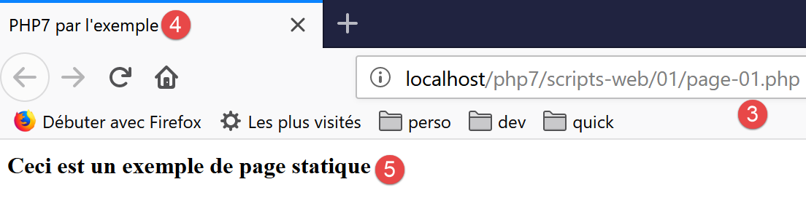
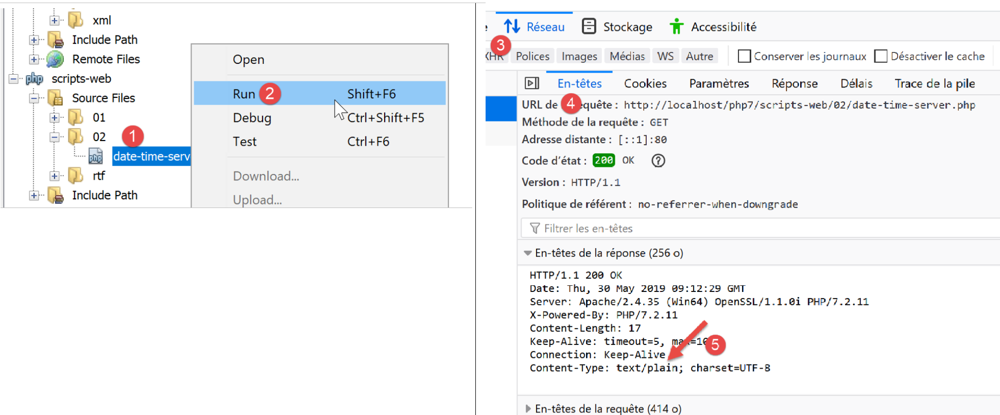
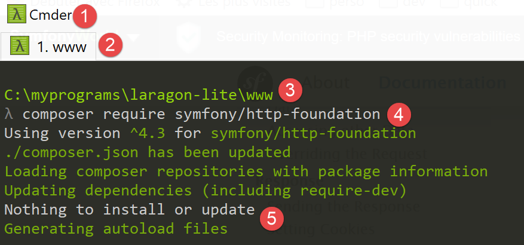
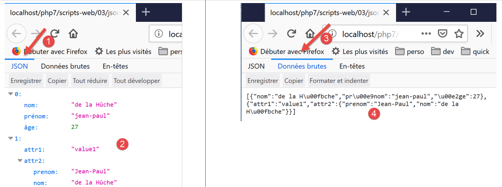
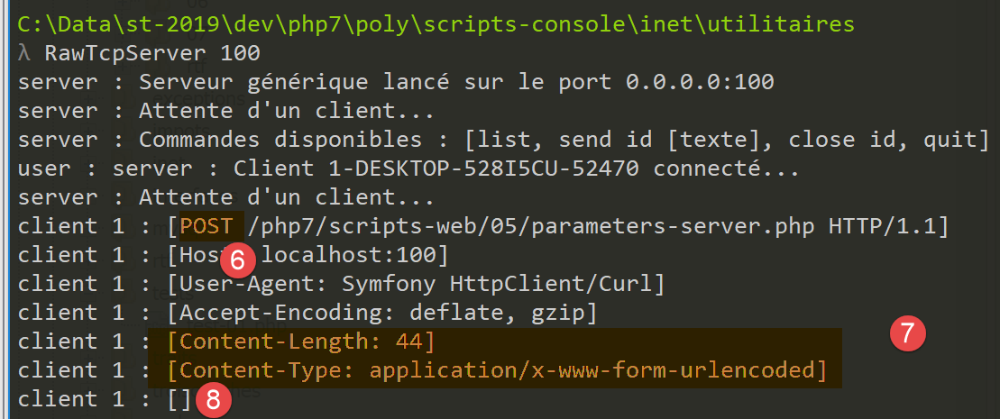
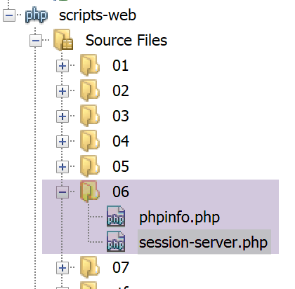
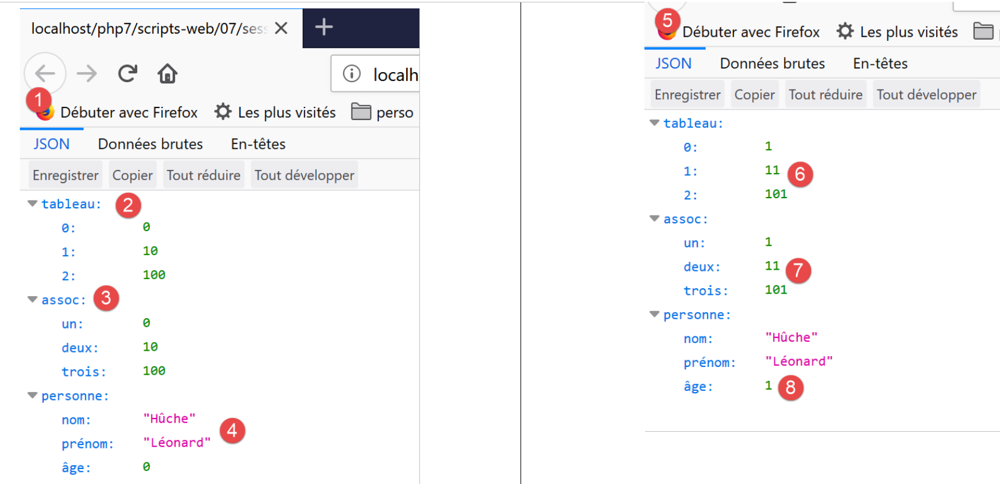
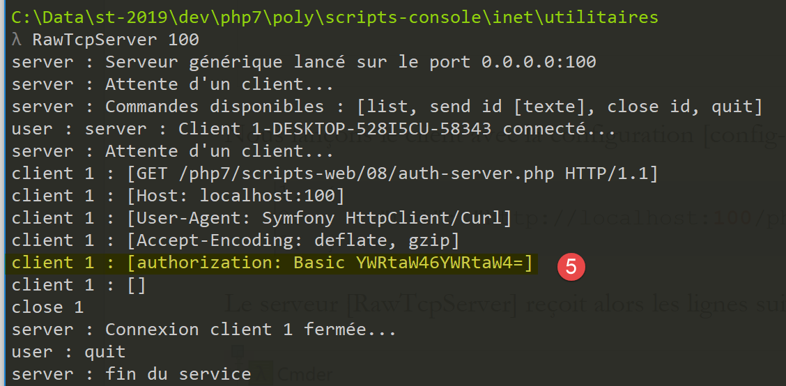

17. Webdienste
Hinweis: Unter einem Webdienst versteht man hier jede Webanwendung, die Rohdaten bereitstellt, die von einem Client – in den folgenden Beispielen ein Konsolenskript – genutzt werden. Wir befassen uns nicht mit einer bestimmten Technologie, wie beispielsweise REST (REpresentational State Transfer) oder SOAP (Simple Object Access Protocol), die mehr oder weniger Rohdaten in einem genau definierten Format bereitstellen. REST liefert jSON, während es bei SOAP XML ist. Jede dieser Technologien beschreibt genau, wie der Client den Server abfragen muss und wie die Antwort des Servers aussehen muss. In diesem Kurs werden wir hinsichtlich der Art der Client-Anfrage und der Server-Antwort wesentlich flexibler vorgehen. Die geschriebenen Skripte und die verwendeten Tools ähneln jedoch denen der Technologie REST.
17.1. Einführung
Da PHP-Programme von einem WEB-Server ausgeführt werden können, wird ein solches Programm zu einem Serverprogramm, das mehrere Clients bedienen kann. Aus Sicht des Clients entspricht der Aufruf eines Webdienstes der Anforderung des URL dieses Dienstes. Der Client kann in einer beliebigen Sprache geschrieben sein, insbesondere in PHP. Im letzteren Fall werden dann die soeben behandelten Netzwerkfunktionen verwendet. Außerdem müssen wir wissen, wie man mit einem Webdienst „kommuniziert“, d. h. das Kommunikationsprotokoll http zwischen einem Server WEB und seinen Clients verstehen. Das war das Ziel des Abschnitts „Link“.
Der im Abschnitt „Link“ beschriebene Web-Client hat es uns ermöglicht, einen Teil des Protokolls HTTP zu entdecken.

In ihrer einfachsten Form verläuft der Austausch zwischen Client und Server wie folgt:
- Der Client baut eine Verbindung zum Port 80 des Webservers auf;
- er stellt eine Anfrage bezüglich eines Dokuments;
- der Webserver sendet das angeforderte Dokument und schließt die Verbindung;
- der Client schließt seinerseits die Verbindung;
Das Dokument kann unterschiedlicher Art sein: ein Text im Format HTML, ein Bild, ein Video … Es kann sich um ein bereits vorhandenes Dokument (statisches Dokument) oder um ein Dokument handeln, das von einem Skript dynamisch generiert wird (dynamisches Dokument). Im letzteren Fall spricht man von Webprogrammierung. Das Skript zur dynamischen Dokumentgenerierung kann in verschiedenen Sprachen geschrieben sein: PHP, Python, Perl, Java, Ruby, C#, VB.net…
Im Folgenden werden wir die Skripte PHP verwenden, um Textdokumente dynamisch zu generieren.

- In [1] baut der Client eine Verbindung zum Server auf, fordert ein Skript PHP an und sendet gegebenenfalls Parameter an dieses Skript;
- in [2] lässt der Webserver das Skript PHP vom Interpreter PHP ausführen. Das Skript generiert ein Dokument, das an den Client [3] gesendet wird;
- Der Server beendet die Verbindung. Der Client tut dasselbe;
Der Webserver kann mehrere Clients gleichzeitig bedienen.
Beim Softwarepaket [Laragon] handelt es sich bei dem Webserver um einen Apache-Server, einen Open-Source-Server der Apache Foundation (http://www.apache.org/). In den folgenden Anwendungen muss [Laragon] gestartet werden:

Dadurch werden der Apache-Webserver sowie die Skripte SGBD und MySQL gestartet.
Die vom Webserver ausgeführten Skripte werden mit dem Tool NetBeans geschrieben. Bisher haben wir PHP-Skripte geschrieben, die in einer Konsolenumgebung ausgeführt werden:

Der Benutzer nutzt die Konsole, um die Ausführung eines Skripts PHP anzufordern und die Ergebnisse zu erhalten.
In den folgenden Client-Server-Anwendungen:
- wird das Client-Skript in einem Konsolenkontext ausgeführt;
- wird das Serverskript in einem Webkontext ausgeführt;

Das Serverskript PHP darf sich nicht an einem beliebigen Ort im Dateisystem befinden. Der Webserver sucht nämlich an den in der Konfiguration festgelegten Orten nach den angeforderten statischen und dynamischen Dokumenten. In der Standardkonfiguration von Laragon werden die Dokumente im Ordner <Laragon>/www gesucht, wobei <Laragon> der Installationsordner von Laragon ist. Wenn also ein Webclient ein Dokument D mit dem Pfad URL [http://localhost/D] anfordert, liefert der Webserver ihm das Dokument D mit dem Pfad [<Laragon>/www/D].
In den folgenden Beispielen werden wir die Serverskripte im Ordner [www/php7/scripts-web] ablegen. Wenn ein Serverskript den Namen S.php trägt, wird es über die Pfade URL und [http://localhost/php7/scripts-web/S.php] vom Webserver angefordert. Daraufhin wird ihm das Dokument „[<Laragon>/www/php7/scripts-web/S.php]“ bereitgestellt.

- in [1], der Ordner [<laragon>/www];
- in [2], den Ordner [php7/scripts-web];
Um mit NetBeans Serverskripte zu erstellen, gehen wir wie folgt vor:

- aus [1-2] erstellen wir ein neues Projekt
- in [3-4] wählen wir die Kategorie [PHP] und das Projekt [PHP Application]

- in [5], den Namen des Projekts;
- in [6], der Projektordner im Dateisystem. Beachten Sie, dass sich dieser im Ordner [<laragon>/www] befindet, wo er hingehört;
- in [7-8]: Übernehmen Sie die vorgeschlagenen Standardwerte;
- unter [9-10]: Übernehmen Sie die vorgeschlagenen Standardwerte. Beachten Sie unter [10], dass die Skripte, die wir in diesem Projekt ablegen werden, mit dem Pfad [http://localhost/php7/scripts-web/] beginnen;

- In [11] werden Ihnen Web-Frameworks angeboten, die in PHP geschrieben sind. Diese Frameworks sind unverzichtbar, sobald die Webanwendung etwas an Umfang gewinnt;
- In [12] können mithilfe des Tools [Composer] Bibliotheken in PHP hinzugefügt werden. Wir haben dieses Tool zweimal in einem Laragon-Fenster [Terminal] verwendet:
- um die Bibliothek [SwiftMailer] zu installieren, mit der E-Mails versendet werden können;
- um die Bibliothek [php-mime-mail-parser] zu installieren, mit der E-Mails gelesen werden können;
- in [13]; sobald der Projekt-Erstellungsassistent bestätigt wurde, erscheint das Projekt unter der Registerkarte „Projekte“ als [13];
17.2. Erstellen einer statischen Seite
Hinweis: Für die weiteren Schritte muss [Laragon] gestartet sein.
Wir zeigen Ihnen, wie Sie mit NetBeans eine statische Seite HTML (HyperText Markup Language) erstellen:

- In [1-5] erstellen wir einen Ordner mit dem Namen [01];


- aus [6-12] erstellen wir die Datei HTML [exemple-01.html];
Die Datei [exemple-01.html] wird wie folgt vorausgefüllt generiert (Mai 2019):
<!DOCTYPE html>
<!--
To change this license header, choose License Headers in Project Properties.
To change this template file, choose Tools | Templates
and open the template in the editor.
-->
<html>
<head>
<title>TODO supply a title</title>
<meta charset="UTF-8">
<meta name="viewport" content="width=device-width, initial-scale=1.0">
</head>
<body>
<div>TODO write content</div>
</body>
</html>
Ändern wir ihren Inhalt wie folgt:
<!DOCTYPE html>
<html>
<head>
<title>PHP7 par l'exemple</title>
<meta charset="UTF-8">
<meta name="viewport" content="width=device-width, initial-scale=1.0">
</head>
<body>
<div><b>Ceci est un exemple de page statique</b></div>
</body>
</html>
Wir haben den Titel der Seite (Zeile 4) sowie deren Inhalt (Zeile 9) geändert.
Lassen wir nun diese Seite HTML vom Apache-Server von Laragon anzeigen:

- In [1-2] lassen wir die Seite vom Apache-Server von Laragon anzeigen;
- in [3], die URL der angezeigten Seite;
- in [4] den Titel, den wir geändert haben;
- in [5] den Inhalt, den wir geändert haben;
Die angezeigte Seite ist eine statische Seite: Man kann sie so oft man will im Browser laden (F5), es wird immer derselbe Inhalt angezeigt.
Die meisten Browser ermöglichen den Zugriff auf die zwischen Client und Server ausgetauschten Daten, die im Abschnitt „Link“ beschrieben wurden. Im Firefox-Browser (Stand: Mai 2019) muss man F12 eingeben, um Zugriff auf diese Daten zu erhalten:

Wie in [1] angegeben, laden wir die Seite neu (F5):

- In [2] sehen wir das vom Browser geladene Dokument: Wir wählen es aus;

- in [5] ist das zu analysierende Dokument ausgewählt;
- in [3-4] fordern wir den Client-Server-Datenaustausch an;
- in [6], diese Datenaustausche;

- In [7] wählen wir die Registerkarte „Header“ aus;
- in [8] die vom Browser angeforderte URL;
- in [9] lautet der an den Server gesendete Befehl [GET http://localhost/php7/scripts-web/01/exemple-01.html HTTP/1.1];
- in [10] die anschließend vom Browser (dem Client) gesendeten Header HTTP;
- in [11] die Header HTTP der Antwort des Servers;

- in [12-14] die Serverantwort, die nach den Headern HTTP gesendet wurde;
- in [14] sieht man, dass der Client-Browser die von uns erstellte Seite HTML empfangen hat. Anschließend hat er diesen Code interpretiert, um Folgendes anzuzeigen:

17.3. Erstellung einer dynamischen Seite in PHP
Wir erstellen nun eine dynamische Seite in PHP:


- In [1-8] erstellen wir eine Seite [exemple-01.php];
Die Datei [exemple-01.php] wird wie folgt vorausgefüllt generiert (Mai 2019):
<!DOCTYPE html>
<!--
To change this license header, choose License Headers in Project Properties.
To change this template file, choose Tools | Templates
and open the template in the editor.
-->
<html>
<head>
<meta charset="UTF-8">
<title></title>
</head>
<body>
<?php
// Fügen Sie hier Ihren Code ein
?>
</body>
</html>
Wir passen den obigen Code wie folgt an:
<!DOCTYPE html>
<html>
<head>
<meta charset="UTF-8">
<title>Exemple de page dynamique</title>
</head>
<body>
<?php
// Zeit: Anzahl der Millisekunden zwischen dem aktuellen Zeitpunkt und dem 01.01.1970
// Anzeigeformat für Datum und Uhrzeit
// d: Tag, zweistellig
// m: zweistelliger Monat
// y: zweistelliges Jahr
// H: Stunde 0,23
// I: Minuten
// s: Sekunden
print "<b>Date et heure du jour : </b>" . date("d/m/y H:i:s", time());
?>
</body>
</html>
Anmerkungen
- Zeile 5: Wir haben den Titel der Seite geändert;
- Zeile 17: Gibt das aktuelle Datum und die aktuelle Uhrzeit aus;
Im Grunde schreibt das obige Skript PHP die aktuelle Uhrzeit in die Konsole. Wird es jedoch von einem Webserver ausgeführt, wird die Ausgabe der Anweisung [print], die normalerweise an die Konsole der Skriptausführung gerichtet ist, hier auf die Verbindung umgeleitet, die den Server mit seinem Client verbindet. In einem Webkontext sendet das obige Skript also die aktuelle Uhrzeit als Text an den Client, in diesem Fall einen Browser.
Führen wir das Skript [exemple-01.php] aus:

- in [3], das vom Apache-Webserver angeforderte URL;
- in [4], den von uns geänderten Seitentitel;
- in [5], der durch die Anweisung [print] generierte Inhalt;
Wir haben es hier mit einer dynamischen Seite zu tun, denn wenn man die Seite im Browser mehrmals neu lädt (F5), ändert sich ihr Inhalt (die Uhrzeit ändert sich).
Der Browser hat einen Datenstrom mit der Bezeichnung HTML empfangen. Um diesen zu ermitteln, muss man den Quellcode der Seite im Browser anzeigen lassen:

- Um das Menü [1] anzuzeigen, klicken Sie mit der rechten Maustaste auf die Seite im Browser;
- in [2], das URL der Seite [exemple-01.php], jedoch mit dem Präfix [view-source :] [3];
- in [4] den Inhalt HTML, den der Browser angezeigt hat;
Man muss also bedenken, dass ein Skript PHP, das von einem Webserver ausgeführt werden soll, einen Datenstrom HTML erzeugen muss.
Betrachten wir nun (F12) die Header HTTP, die vom Server an den Client-Browser gesendet werden:

- in [3] ein Header HTTP, der bei der Anforderung der statischen Seite nicht vorhanden war. Dieser Header zeigt, dass die Antwort des Servers durch ein Skript PHP generiert wurde;
Wir haben gesehen, dass die Antwort (hier der Datenstrom HTML) des Servers durch ein Skript PHP generiert werden konnte. Das Skript kann auch die Header HTTP und nahezu alle Elemente der Serverantwort generieren.
17.4. Grundlagen der Sprache HTML
Dieses Kapitel wird nicht näher auf die Programmierung in WEB eingehen. Eine Webanwendung in MVC wird im Abschnitt „Link“ entwickelt. Dieses Kapitel befasst sich vielmehr mit Webdiensten: PHP-Seiten, die über einen Webserver Daten an andere PHP-Clients liefern. Dennoch erschien es uns sinnvoll, dem Leser einige Grundlagen von HTML zu vermitteln.
Ein Webbrowser kann verschiedene Dokumente anzeigen, wobei das häufigste das HTML-Dokument (HTML Markup Language) ist. Dabei handelt es sich um einen Text, der mit Tags der Form HTML formatiert ist. So wird der Text <b>important</b> den Text important in Fettdruck anzeigen. Es gibt auch einzelne Tags, wie beispielsweise das Tag <hr/>, das eine horizontale Linie anzeigt. Wir werden nicht auf die Tags eingehen, die in einem HTML-Text vorkommen können. Es gibt zahlreiche WYSIWYG-Programme, mit denen man eine WEB-Seite erstellen kann, ohne eine einzige Zeile HTML-Code schreiben zu müssen. Diese Tools generieren automatisch den HTML-Code für ein Layout, das mit der Maus und vordefinierten Steuerelementen erstellt wurde. So kann man (mit der Maus) eine Tabelle in die Seite einfügen und anschließend den von der Software generierten Code HTML einsehen, um die Tags zu ermitteln, die zur Definition einer Tabelle in einer WEB-Seite verwendet werden müssen. Einfacher geht es nicht. Außerdem sind Kenntnisse der Sprache HTML unerlässlich, da dynamische Webanwendungen den Code HTML, der an die Clients WEB gesendet werden soll, selbst generieren müssen. Dieser Code wird programmgesteuert generiert, und man muss natürlich wissen, was generiert werden muss, damit der Client die gewünschte Webseite erhält.
Zusammenfassend lässt sich sagen, dass man keineswegs die gesamte Sprache HTML beherrschen muss, um mit der Webprogrammierung zu beginnen. Allerdings sind diese Kenntnisse notwendig und können durch die Verwendung von WYSIWYG-Software zur Erstellung von WEB-Seiten wie DreamWeaver und Dutzenden anderen erworben werden. Eine weitere Möglichkeit, die Feinheiten der Sprache HTML zu entdecken, besteht darin, im Internet zu stöbern und den Quellcode von Seiten anzuzeigen, die interessante und Ihnen noch unbekannte Merkmale aufweisen.
Betrachten wir das folgende Beispiel, das einige Elemente zeigt, die in einem WEB-Dokument vorkommen können, wie zum Beispiel:
- eine Tabelle;
- ein Bild;
- einem Link.

Ein HTML-Dokument hat im Allgemeinen folgende Form:
<html> <head> <title>Ein Titel</title> ... </head> <body-Attribute> ... </body></html>
Das gesamte Dokument wird von den Tags <html>…</html> umschlossen. Es besteht aus zwei Teilen:
- <head>…</head>: Dies ist der nicht sichtbare Teil des Dokuments. Er enthält Informationen für den Browser, der das Dokument anzeigen wird. Oft findet man hier das Tag <title>…</title>, das den Text festlegt, der in der Titelleiste des Browsers angezeigt wird. Außerdem können hier weitere Tags vorkommen, insbesondere solche, die die Schlüsselwörter des Dokuments definieren – Schlüsselwörter, die anschließend von Suchmaschinen verwendet werden. In diesem Teil können sich auch Skripte befinden, die meist in JavaScript oder VBScript geschrieben sind und vom Browser ausgeführt werden.
- <body-Attribute>…</body>: Dies ist der Teil, der vom Browser angezeigt wird. Die in diesem Teil enthaltenen Tags HTML geben dem Browser die „gewünschte“ visuelle Darstellung des Dokuments vor. Jeder Browser interpretiert diese Tags auf seine eigene Weise. Zwei Browser können daher ein und dasselbe Webdokument unterschiedlich darstellen. Dies ist in der Regel eine der Herausforderungen für Webdesigner.
Der Code HTML unseres Beispieldokuments lautet wie folgt:
<!DOCTYPE html>
<html xmlns="http://www.w3.org/1999/xhtml">
<head>
<meta http-equiv="Content-Type" content="text/html; charset=utf-8" />
<title>Quelques balises HTML</title>
</head>
<body style="background-image: url(images/standard.jpg)">
<h1 style="text-align: left">Quelques balises HTML</h1>
<hr />
<table border="1">
<thead>
<tr>
<th>Colonne 1</th>
<th>Colonne 2</th>
<th>Colonne 3</th>
</tr>
</thead>
<tbody>
<tr>
<td>cellule(1,1)</td>
<td style="text-align: center;">cellule(1,2)</td>
<td>cellule(1,3)</td>
</tr>
<tr>
<td>cellule(2,1)</td>
<td>cellule(2,2)</td>
<td>cellule(2,3</td>
</tr>
</tbody>
</table>
<br/><br/>
<table border="0">
<tr>
<td>Une image</td>
<td>
<img border="0" src="images/cerisier.jpg"/></td>
</tr>
<tr>
<td>Le site de Polytech'Angers</td>
<td><a href="http://www.polytech-angers.fr/fr/index.html">ici</a></td>
</tr>
</table>
</body>
</html>
Tags und Beispiele HTML | |
<title>Einige Tags HTML</title> (Zeile 5) Der Text [Quelques balises HTML] erscheint in der Titelleiste des Browsers, der das Dokument anzeigt | |
<hr />: Zeigt eine horizontale Linie an (Zeile 10) | |
<Tabellenattribute>….</table>: zum Definieren der Tabelle (Zeilen 12, 32) <thead>…</thead>: zur Definition der Spaltenüberschriften (Zeilen 13, 19) <tbody>…</tbody>: zum Definieren des Tabelleninhalts (Zeile 20, 31) <tr-Attribute>…</tr>: zur Definition einer Zeile (Zeilen 21, 25) <td Attribute>…</td>: zum Definieren einer Zelle (Zeile 22) Beispiele: <table border="1">…</table>: Das Attribut „border“ legt die Dicke des Tabellenrandes fest <td style="text-align: center;">Zelle(1,2)</td> (Zeile 23): Definiert eine Zelle, deren Inhalt „Zelle(1,2)“ lautet. Dieser Inhalt wird horizontal zentriert (text-align: center). | |
<img border="0" src="images/cerisier.jpg"/> (Zeile 38): Definiert ein Bild ohne Rahmen (border=0"), dessen Quelldatei [images/cerisier.jpg] auf dem Webserver ist (src="images/cerisier.jpg"). Dieser Link befindet sich in einem Webdokument, das mit dem URL http://localhost/php7/scripts-web/01/balises.html erstellt wurde. Daher fordert der Browser die Datei URL http://localhost/php7/scripts-web/01/images/cerisier.jpg an, um das hier referenzierte Bild zu erhalten. | |
<a href="http://www.polytech-angers.fr/fr/index.html">hier</a> (Zeile 42): bewirkt, dass der Text „ici“ als Link zu „URL“ http://www.polytech-angers.fr/fr/index.html dient. | |
<body style="background-image: url(images/standard.jpg)"> (Zeile 8): Gibt an, dass sich das Bild, das als Seitenhintergrund dienen soll, unter der Adresse URL [images/standard.jpg] auf dem Server WEB befindet. In unserem Beispiel fordert der Browser die URL http://localhost/php7/scripts-web/01/images/standard.jpg an, um dieses Hintergrundbild abzurufen. |
An diesem einfachen Beispiel wird deutlich, dass der Browser drei Anfragen an den Server stellen muss, um das gesamte Dokument aufzubauen:
- http://localhost/php7/scripts-web/01/images/balises.html, um den Quellcode HTML des Dokuments abzurufen
- http://localhost/php7/scripts-web/01/images/cerisier.jpg, um das Bild cerisier.jpg abzurufen
- http://localhost/php7/scripts-web/01/images/standard.jpg, um das Hintergrundbild standard.jpg zu erhalten
Dies geht aus dem Datenaustausch zwischen Client und Server hervor (F12 im Browser):

- In [3-5] sind die drei vom Browser gestellten Anfragen zu sehen;
17.5. Eine statische Seite dynamisieren
Zeigen wir, wie wir die Seite HTML [exemple-01.html] dynamisieren können. Kopieren wir den Inhalt

Wir haben den Inhalt von [exemple-01.html] in die Datei [page-01.php] kopiert. Wenn wir das Webskript [2] ausführen, erhalten wir im Browser Folgendes:

- in [3] die angeforderte Datei URL;
- in [4] der Titel der Seite;
- in [5] den Inhalt der Seite;
Wenn man den vom Browser empfangenen Code anzeigen lässt, findet man Folgendes:

- in [7] ist der Code HTML im Skript [exemple-01.php] platziert
Der Interpreter PHP hat das Skript [page-01.php] interpretiert und denselben Datenstrom HTML erzeugt wie die statische Seite [exemple-01.html]. Im Skript [page-01.php] gab es kein PHP, sondern nur HTML. Daraus lässt sich Folgendes ableiten: Wenn der Interpreter PHP in einem Skript PHP den Befehl HTML findet, lässt er diesen unberührt und sendet ihn unverändert an den Client.
Fügen wir nun einige PHP-Anweisungen in das Skript [page-01.php] ein, damit der Interpreter PHP etwas zu tun hat:
<!DOCTYPE html>
<html>
<head>
<title><?php print $page->title ?></title>
<meta charset="UTF-8">
<meta name="viewport" content="width=device-width, initial-scale=1.0">
</head>
<body>
<div><b><?php print $page->contents ?></b></div>
</body>
</html>
In den Zeilen 4 und 9 haben wir den Code PHP eingefügt, um den Titel und den Inhalt der Seite dynamisch zu generieren. Wir gehen hier davon aus, dass die Variable [$page] ein Objekt ist, das die anzuzeigenden Daten enthält.
Wenn wir diesen neuen Code ausführen, erhalten wir im Browser folgendes Ergebnis:

- in [1], das angeforderte URL;
- in [2] konnte der Seitentitel nicht angezeigt werden, da die Variable [$page] nicht definiert war;
- in [3] gilt dasselbe für den Inhalt;
Schreiben wir nun das folgende Webskript [exemple-02.php]:

Das Skript [exemple-02.php] sieht wie folgt aus:
<?php
// Hier werden die anzuzeigenden Seitenelemente definiert
$page=new \stdclass();
$page->title="Un nouveau titre";
$page->contents="Un nouveau contenu généré dynamiquement";
// [page-01] wird angezeigt
require_once "page-01.php";
- Zeilen 4–6: Wir definieren das Objekt [$page];
- Zeile 8: Das Skript [page-01.php] wird eingebunden. Der Code dieses Skripts wird seinerseits interpretiert:
- Die Variable [$page] ist nun definiert, und der Interpreter PHP wird sie verwenden;
- Der Code HTML aus [page-01.php] wird unverändert an den Kunden gesendet;
- die Ergebnisse der Vorgänge PHP und [print] werden in den an den Kunden gesendeten Text-Feed aufgenommen;
Wenn wir nun das Webskript [exemple-02.php] ausführen, erhalten wir im Browser Folgendes:

Wenn wir den vom Browser empfangenen Textinhalt anzeigen:

- Die Codes PHP, die zuvor in [2] und [3] enthalten waren, wurden durch die Ergebnisse der beiden Befehle [print] ersetzt;
Aus diesem Beispiel lassen sich zwei Dinge ableiten:
- Die für den Browser bestimmten Seiten HTML können in Skripten PHP isoliert werden, die nur diesen Code HTML und einige dynamische Teile enthalten, die durch den Code PHP generiert werden. Es sollte so wenig PHP wie möglich in diesen Seiten enthalten sein;
- die gesamte Logik, die die in den HTML-Seiten enthaltenen dynamischen Daten generiert, muss in reinen PHP-Skripten isoliert werden, die keinerlei Code zur Darstellung der Seiten enthalten (HTML, CSS, JavaScript…) enthalten;
Dies ermöglicht eine Aufgabentrennung:
- die Erstellung der anzuzeigenden Webseiten (HTML, CSS, JavaScript…);
- die Aufgabe der Logik der zu erstellenden Webanwendung. Diese Logik kann mit einer dreischichtigen Architektur implementiert werden, genau wie wir es bei den Konsolenskripten getan haben;
Anschließend werden wir spezielle Webskripte erstellen;
- diese senden lediglich Daten an den Client und keine Formatierung (HTML, CSS, JavaScript). Es handelt sich also eher um Datenserver als um Webseiten;
- Die Clients dieser Webskripte sind Konsolenskripte, die die vom Server gesendeten Daten abrufen und weiterverarbeiten;
17.6. Client-Server-Anwendung für Datum und Uhrzeit
Wir befinden uns nun in der folgenden Konfiguration:

Wir werden Folgendes schreiben:
- ein Webskript [1], das dem Client das aktuelle Datum und die aktuelle Uhrzeit übermittelt;
- ein Konsolenskript [2], das als Client des Webskripts fungiert: Es empfängt das vom Webskript gesendete Datum und die Uhrzeit und zeigt sie in der Konsole an;

- in [1] das Webskript [date-time-server.php];
- in [2], das Konsolenskript [date-time-client], das als Client des Webskripts fungiert;
17.6.1. Das Server-Skript
Wir haben bereits ein Webskript geschrieben, das das aktuelle Datum und die Uhrzeit generiert (siehe Abschnitt „Link“). Es handelte sich um das folgende Skript [exemple-01.php]:
<!DOCTYPE html>
<html>
<head>
<meta charset="UTF-8">
<title>Exemple de page dynamique</title>
</head>
<body>
<?php
// time: Anzahl der Millisekunden seit dem 01.01.1970
// Format für die Anzeige von Datum und Uhrzeit
// d: Tag zweistellig
// m: zweistelliger Monat
// y: zweistelliges Jahr
// H: Stunde 0,23
// i: Minuten
// s: Sekunden
print "<b>Date et heure du jour : </b>" . date("d/m/y H:i:s", time());
?>
</body>
</html>
Wir haben angekündigt, dass wir Datenserver schreiben werden: Rohdaten ohne Formatierung (HTML). Das Serverskript [date-time-server.php] sieht dann wie folgt aus:
<?php
// Der Header wird festgelegt: HTP [Content-Type]
header('Content-Type: text/plain; charset=UTF-8');
//
// Datum und Uhrzeit werden gesendet
// Zeit: Anzahl der Millisekunden seit dem 01.01.1970
// Anzeigeformat für Datum und Uhrzeit
// d: Tag, zweistellig
// m: Monat (2 Ziffern)
// y: Jahr (2 Ziffern)
// H: Stunde 0,23
// i: Minuten
// s: Sekunden
print date("d/m/y H:i:s", time());
- Zeile 4: Wir legen den Header HTTP [Content-Type] fest, der dem Client mitteilt, um welche Art von Dokument es sich handelt, das er erhalten wird. Bisher lautete der Header [Content-Type]: [Content-Type: text/html; charset=UTF-8]. Hier teilen wir dem Client mit, dass es sich bei dem Dokument um Text ohne Formatierung handelt: HTML. Für unseren Konsolen-Client ist dies nicht wichtig, da er diesen Header nicht auswertet. Wichtiger ist dies für Browser-Clients, die diesen Header hingegen auswerten;
Führen wir dieses Serverskript aus:

Wenn wir die Antwort des Servers (F12) im Browser untersuchen, sehen wir in „[5]“ den Header „HTTP“, den das Serverskript gesetzt hat, und in „[8]“ das empfangene Textdokument;

17.6.2. Das Client-Skript
Im Abschnitt „Link“ haben wir mehrere Clients vom Typ HTTP entwickelt. Wir könnten diese nutzen, um das vom Server-Skript [date-time-server.php] gesendete Textdokument abzurufen. Wir werden dies jedoch nicht tun. Wie bereits bei den Protokollen SMTP und IMAP werden wir eine Bibliothek eines Drittanbieters verwenden, nämlich die Komponente [HttpClient] des Symfony-Frameworks [https://symfony.com/doc/master/components/http_client.html].
Wie bei den beiden vorherigen Bibliotheken verwenden wir das Tool [Composer], um die Symfony-Komponente [HttpClient] zu installieren. In einem Laragon-Fenster (siehe Abschnitt „Link“) geben wir den folgenden Befehl ein:

- in [3]: Vergewissern Sie sich, dass Sie sich im Ordner [<laragon>/www/] befinden, wobei <laragon> der Installationsordner von Laragon ist;
- in [4] den Befehl [composer], der die Symfony-Bibliothek [HttpClient] installiert;
- in [5] wird nichts installiert, da die Bibliothek [HttpClient] auf diesem Rechner bereits installiert war;
- Bei [6-7] erscheinen neue Ordner in [<laragon>/www/vendor/symfony];
Anstelle von [5] sollten Sie etwa Folgendes sehen:
C:\myprograms\laragon-lite\www
? composer require symfony/http-client
Using version ^4.3 for symfony/http-client
./composer.json has been updated
Loading composer repositories with package information
Updating dependencies (including require-dev)
Package operations: 4 installs, 0 updates, 0 removals
- Installing symfony/polyfill-php73 (v1.11.0): Downloading (100%)
- Installing symfony/http-client-contracts (v1.1.1): Downloading (100%)
- Installing psr/log (1.1.0): Loading from cache
- Installing symfony/http-client (v4.3.0): Downloading (100%)
Writing lock file
Generating autoload files
Stellen Sie sicher, dass der Ordner „[<laragon>/www/vendor]“ Teil des Zweigs „[Include Path]“ Ihres Projekts ist (siehe Absatz „Link“):

Nachdem dies erledigt ist, können wir das Konsolenskript [date-time-client.php] schreiben:

Das Konsolenskript [date-time-client.php] wird die folgende Datei jSON [config-date-time-client.json] verarbeiten:
- Zeile 2: das Serverskript URL;
Das Client-Skript [date-time-client.php] lautet wie folgt:
<?php
// Client des Datums-/Zeitdienstes
//
// Fehlerbehandlung
//ini_set("error_reporting", E_ALL & ~ E_WARNING & ~E_DEPRECATED & ~E_NOTICE);
//ini_set("display_errors", "off");
//
// Abhängigkeiten
require_once 'C:/myprograms/laragon-lite/www/vendor/autoload.php';
use Symfony\Component\HttpClient\HttpClient;
// die Konfiguration des Clients
const CONFIG_FILE_NAME = "config-date-time-client.json";
// Die Konfiguration wird abgerufen
if (!file_exists(CONFIG_FILE_NAME)) {
print "Le fichier de configuration [" . CONFIG_FILE_NAME . "] n'existe pas\n";
exit;
}
if (!$config = \json_decode(\file_get_contents(CONFIG_FILE_NAME), true)) {
print "Erreur lors de l'exploitation du fichier de configuration jSON [" . CONFIG_FILE_NAME . "]\n";
exit;
}
// einen Client anlegen HTTP
$httpClient = HttpClient::create();
try {
// die Anfrage wird gestellt
$response = $httpClient->request('GET', $config['url']);
// Status der Antwort
$statusCode = $response->getStatusCode();
print "---Réponse avec statut : $statusCode\n";
// Die Header werden abgerufen
print "---Entêtes de la réponse\n";
$headers = $response->getHeaders();
foreach ($headers as $type => $value) {
print "$type: " . $value[0] . "\n";
}
// Der Antworttext wird abgerufen
$content = $response->getContent();
// Anzeige
print "---Réponse du serveur : [$content]\n";
} catch (TypeError | RuntimeException $ex) {
// Der Fehler wird angezeigt
print "Erreur de communication avec le serveur : " . $ex->getMessage() . "\n";
exit;
}
Anmerkungen
- Zeile 10: Wie bereits bei den vorherigen Bibliotheken laden wir die Datei [<laragon>/www/vendor/autoload.php];
- Zeile 11: Wir deklarieren die Klasse [HttpClient], die wir verwenden werden;
- Zeilen 13–24: Wir rufen die Konfiguration des Skripts aus dem Dictionary [$config] ab;
- Zeile 27: Wir erstellen ein Objekt vom Typ [HttpClient];
- Zeile 31: Wir fordern das URL des Serverskripts mithilfe eines Befehls GET: [GET URL HTTTP/1.1] an. Dieser Vorgang erfolgt asynchron. Die Ausführung wird in Zeile 33 fortgesetzt, ohne auf den Eingang der Antwort zu warten;
- Zeile 33: Der Status der Antwort wird abgefragt. Dieser Status befindet sich im ersten vom Server zurückgesendeten Header HTTP. Ist dieser Header also [HTTP/1.1 200 OK], lautet der Antwortstatus 200. Dieser Vorgang ist blockierend: Die Ausführung wird erst fortgesetzt, wenn der Client die gesamte Antwort vom Server empfangen hat;
- Zeile 37: Die Header HTTP der Antwort werden abgefragt;
- Zeile 42: Das vom Server zurückgesendete Dokument wird abgefragt: Man weiß, dass es sich bei diesem Dokument um einen Text handelt.
- Zeilen 45–49: Im Fehlerfall wird die Fehlermeldung angezeigt;
Wenn man das Client-Skript ausführt (Laragon muss gestartet sein, damit das Server-Skript erreicht werden kann), erhält man auf der Konsole folgendes Ergebnis:
---Réponse avec statut : 200
---Entêtes de la réponse
date: Thu, 30 May 2019 14:42:03 GMT
server: Apache/2.4.35 (Win64) OpenSSL/1.1.0i PHP/7.2.11
x-powered-by: PHP/7.2.11
content-length: 17
content-type: text/plain; charset=UTF-8
---Réponse du serveur : [30/05/19 14:42:03]
In Zeile 8 werden das aktuelle Datum und die Uhrzeit korrekt abgerufen.
Vielleicht möchten Sie wissen, was das Client-Skript an den Server gesendet hat. Dazu verwenden wir unseren generischen Server TCP (siehe Abschnitt „Link“):

- in [1], dem Verzeichnis für Dienstprogramme;
- in [2] wird der Server TCP auf Port 100 gestartet;
- in [3], wartet auf einen über die Tastatur eingegebenen Befehl;
Wir ändern die Konfigurationsdatei des Skripts [date-time-client.php]:
{
"url": "http://localhost:100/php7/scripts-web/02/date-time-server.php"
}
Diesmal kontaktiert der Client den Server [localhost] auf Port 100. Es wird also unser generischer Server TCP angefragt. Wenn wir das Konsolenskript [date-time-client.php] ausführen, verändert sich die Konsole des generischen Servers TCP wie folgt:

- in [3], den vom Client-Skript erstellten Befehl HTTP GET;
- zu [4], der Signatur des Konsolenskripts;
- in [5] die Antwort des Servers auf das Client-Skript. Es ist zu beachten, dass dies keine gültige Antwort HTTP ist:
- Es müssten HTTP-Header vorhanden sein;
- dann eine Leerzeile;
- dann das an den Client gesendete Textdokument;
- in [6] wird die Kommunikation mit dem Client-Skript beendet, damit dieses erkennt, dass es die gesamte Antwort erhalten hat;
Auf der Seite des Client-Skripts erscheint folgende Konsolenausgabe:

- in [7], was der Symfony-Client erhalten hat;
17.6.3. Das Serverskript – Version 2
Grundsätzlich sind die Funktionen PHP zum Schreiben eines Webskripts nicht objektorientiert. Auf der Serverseite sind wir daher gezwungen, Klassen und klassische Funktionen PHP zu mischen. Um einen einheitlicheren Schreibstil zu erzielen, werden wir die Bibliothek [HttpFoundation] des Symfony-Frameworks verwenden. Sie hat alle klassischen Funktionen PHP für einen Webdienst in einem System aus Klassen und Schnittstellen gekapselt. Die Dokumentation der Bibliothek ist unter URL [https://symfony.com/doc/current/components/http_foundation.html] (Mai 2019) verfügbar.
Um die Bibliothek zu installieren, gehen wir in einem Laragon-Terminal wie folgt vor (siehe Abschnitt „Link“):

- [2-3]: Stellen Sie sicher, dass Sie sich im Ordner [<laragon>/www] befinden;
- [4]: Der Befehl [composer] installiert die Bibliothek [HttpFoundation];
- [5]: In diesem Beispiel war die Bibliothek bereits installiert;
Bei der ersten Installation sollten Sie Konsolenprotokolle erhalten, die in etwa so aussehen:
C:\myprograms\laragon-lite\www
? composer require symfony/http-foundation
Using version ^4.3 for symfony/http-foundation
./composer.json has been updated
Loading composer repositories with package information
Updating dependencies (including require-dev)
Package operations: 2 installs, 0 updates, 0 removals
- Installing symfony/mime (v4.3.0): Downloading (100%)
- Installing symfony/http-foundation (v4.3.0): Downloading (100%)
Writing lock file
Generating autoload files
Die zweite Version des Webservers [date-time-server-2.php] lautet wie folgt:
<?php
// Verwendung der Symfony-Bibliotheken
// Abhängigkeiten
require_once 'C:/myprograms/laragon-lite/www/vendor/autoload.php';
use Symfony\Component\HttpFoundation\Response;
// Festlegen des Content-Type-Headers
$response=new Response();
$response->headers->set("content-type","text/plain");
$response->setCharset("utf-8");
// Der Inhalt der Antwort wird festgelegt
//
// Datum und Uhrzeit senden
// Zeit: Anzahl der Millisekunden seit dem 01.01.1970
// Format für die Anzeige von Datum und Uhrzeit
// d: Tag, zweistellig
// m: Monat (2 Ziffern)
// y: zweistelliges Jahr
// H: Stunde 0,23
// i: Minuten
// s: Sekunden
$response->setContent(date("d/m/y H:i:s", time()));
// Die Antwort wird gesendet
$response->send();
Anmerkungen
- Zeile 7: Die Klasse [Response] aus der Symfony-Bibliothek [HttpFoundation] verwaltet die gesamte Antwort an die Clients des Webdienstes;
- Zeile 10: Erstellung einer Instanz der Klasse [Response];
- Zeile 11: Es wird angegeben, dass die Antwort vom Typ [text/plain] ist;
- Zeile 12: Die Antwort besteht aus dem Text UTF-8;
- Zeile 25: Das Antwortdokument wird festgelegt, wie vom Client angefordert;
- Zeile 28: Die Antwort wird an den Kunden gesendet;
17.6.4. Das Client-Skript – Version 2
Das Client-Skript bleibt unverändert. Es wird lediglich die Konfigurationsdatei [config-date-time-client.json] geändert:
Die Ergebnisse sind dieselben wie in Version 1.
17.7. Ein Datenserver jSON
Die Antwort eines Webskripts kann aus mehreren Daten bestehen, die in Tabellen und Objekten zusammengefasst werden können. Das Skript kann diese verschiedenen Elemente dann in einer Zeichenkette jSON senden, die der Client entschlüsselt.

17.7.1. Das Server-Skript
Das Skript [json-server.php] verwendet die folgende Klasse [Personne]:
<?php
namespace Modèles;
class Personne implements \JsonSerializable {
// Attribute
private $nom;
private $prénom;
private $âge;
// Konvertierung eines assoziativen Arrays in ein Objekt [Personne]
public function setFromArray(array $assoc): Personne {
// Das aktuelle Objekt wird mit dem assoziativen Array initialisiert
foreach ($assoc as $attribute => $value) {
$this->$attribute = $value;
}
// Ergebnis
return $this;
}
// Getter und Setter
public function getNom() {
return $this->nom;
}
public function getPrénom() {
return $this->prénom;
}
public function setNom($nom) {
$this->nom = $nom;
return $this;
}
public function setPrénom($prénom) {
$this->prénom = $prénom;
return $this;
}
public function getÂge() {
return $this->âge;
}
public function setÂge($âge) {
$this->âge = $âge;
return $this;
}
// toString
public function __toString(): string {
return "Personne [$this->prénom, $this->nom, $this->âge]";
}
// implementiert die Schnittstelle JsonSerializable
public function jsonSerialize(): array {
// Es wird ein assoziatives Array zurückgegeben, dessen Schlüssel die Attribute des Objekts sind
// Dieses Array kann anschließend in jSON kodiert werden
return get_object_vars($this);
}
// Konvertierung von einem jSON in ein Objekt [Personne]
public static function jsonUnserialize(string $json): Personne {
// Es wird eine Person aus der Zeichenfolge jSON angelegt
return (new Personne())->setFromArray(json_decode($json, true));
}
}
Kommentare
- Zeile 5: Die Klasse implementiert die Schnittstelle PHP [JsonSerializable]. Dadurch muss sie die Methode [jsonSerialize] in den Zeilen 55–59 implementieren. Die Methode muss ein assoziatives Array zurückgeben, das in jSON serialisiert werden muss. Bei Verwendung des Ausdrucks [json_encode($personne)] prüft die Funktion [json_encode], ob die Klasse [Personne] die Schnittstelle [JsonSerializable] implementiert. Ist dies der Fall, wird der Ausdruck zu [json_encode($personne→serialize())];
- Zeilen 12–19: Die Klasse hat keinen Konstruktor, sondern einen Initialisierer. Die Klasse [Personne] kann dann durch den Ausdruck [(new Personne())→setFromArray($array)] instanziiert werden. Es können verschiedene Arten von Initialisierern vorhanden sein, während es nur einen Konstruktor geben kann. Diese Initialisierer ermöglichen verschiedene Arten der Instanziierung des Typs [(new Personne())→initialiseuri(…)];
- Zeilen 62–65: Die statische Funktion [jsonUnserialize] ermöglicht es, ein Objekt [Personne] anhand seiner Zeichenkette jSON zu erstellen;
Das Skript [json-server.php] sieht wie folgt aus:
<?php
// Abhängigkeiten
require_once __DIR__ . "/Personne.php";
use \Modèles\Personne;
require_once 'C:/myprograms/laragon-lite/www/vendor/autoload.php';
use \Symfony\Component\HttpFoundation\Response;
// Der Header „Content-Type“ und die verwendete Zeichenkodierung werden festgelegt
$response = new Response();
$response->headers->set("content-type", "application/json");
$response->setCharset("utf-8");
// Es wird ein Objekt vom Typ „Person“ erstellt
$personne = (new Personne())->setFromArray([
"nom" => "de la Hûche",
"prénom" => "jean-paul",
"âge" => 27]);
// ein assoziatives Array
$assoc = ["attr1" => "value1",
"attr2" => [
"prenom" => "Jean-Paul",
"nom" => "de la Hûche"
]
];
// Der Inhalt der Antwort ist jSON
$response->setContent(json_encode([$personne, $assoc]));
// Senden der Antwort
$response->send();
Kommentare
- Zeilen 4–5: Die Klasse [Personne] wird importiert;
- Zeile 11: Es wird angegeben, dass das Dokument vom Typ [application/json] sein wird. Beim Empfang dieses Headers zeigen die Browser eine Formatierung der Zeichenkette jSON an, anstatt reinen Text anzuzeigen;
- Zeile 12: Die Zeichenfolge jSON enthält die Zeichen UTF-8;
- Zeilen 15–18: Es wird ein Objekt [Personne] erstellt;
- Zeilen 20–25: Es wird ein zweistufiges assoziatives Array erstellt;
- Zeile 27: Die Zeichenfolge jSON aus einem Array wird an den Client gesendet:
- Das Element [$personne] wird mithilfe seiner Methode [jsonSerialize] in jSON serialisiert;
- das Element [$assoc] wird nativ in jSON serialisiert;
Wenn man dieses Server-Skript ausführt (Laragon muss gestartet sein), erhält man im Browser folgende Antwort:


Anmerkungen
- in [2], die formatierte Antwort jSON;
- in [4] die Antwort jSON im Rohformat. Man beachte die Kodierung der Zeichen mit Akzenten;
- in [6] ist es der vom Server gesendete Inhaltstyp [application/json], der den Browser dazu veranlasst hat, diese Formatierung vorzunehmen;
17.7.2. Der Client

Der Client [json-client.php] wird durch die folgende Datei jSON [config-json-client.json] konfiguriert:
Das Skript [json-client.php] lautet wie folgt:
<?php
// Client eines Dienstes jSON
//
// Fehlerbehandlung
//ini_set("error_reporting", E_ALL & ~ E_WARNING & ~E_DEPRECATED & ~E_NOTICE);
//ini_set("display_errors", "off");
//
// Abhängigkeiten
require_once 'C:/myprograms/laragon-lite/www/vendor/autoload.php';
use Symfony\Component\HttpClient\HttpClient;
require_once __DIR__ . "/Personne.php";
use \Modèles\Personne;
// die Konfiguration des Clients
const CONFIG_FILE_NAME = "config-json-client.json";
// Die Konfiguration wird abgerufen
if (!file_exists(CONFIG_FILE_NAME)) {
print "Le fichier de configuration [" . CONFIG_FILE_NAME . "] n'existe pas\n";
exit;
}
if (!$config = \json_decode(\file_get_contents(CONFIG_FILE_NAME), true)) {
print "Erreur lors de l'exploitation du fichier de configuration jSON [" . CONFIG_FILE_NAME . "]\n";
exit;
}
// einen Client anlegen HTTP
$httpClient = HttpClient::create();
try {
// Anfrage wird gestellt
$response = $httpClient->request('GET', $config['url']);
// Status der Antwort
$statusCode = $response->getStatusCode();
print "---Réponse avec statut : $statusCode\n";
// Die Header werden abgerufen
print "---Entêtes de la réponse\n";
$headers = $response->getHeaders();
foreach ($headers as $type => $value) {
print "$type: " . $value[0] . "\n";
}
// Der Hauptteil der Antwort wird abgerufen: jSON
list($personne, $assoc) = json_decode($response->getContent(), true);
// Eine Person wird anhand des Arrays ihrer Attribute instanziiert
$personne = (new Personne())->setFromArray($personne);
// Die Antwort des Servers wird angezeigt
print "---Réponse du serveur\n";
print "$personne\n";
print "tableau=" . json_encode($assoc, JSON_UNESCAPED_UNICODE) . "\n";
} catch (TypeError | RuntimeException $ex) {
// Der Fehler wird angezeigt
print "Erreur de communication avec le serveur : " . $ex->getMessage() . "\n";
}
Anmerkungen
- Zeilen 12–13: Import der Klasse [Personne];
- Zeile 30: Erstellung des Clients HTTP;
- Zeile 44: Die vom Server gesendete Zeichenkette „jSON“ wird dekodiert. Es ist bekannt, dass es sich bei dem kodierten Inhalt um ein Array mit zwei Elementen handelt, das zwei assoziative Arrays enthält;
- Zeile 46: Es wird ein Objekt [Personne] erstellt, um es anschließend in Zeile 49 anzuzeigen;
- Zeile 50: Das zweite assoziative Array wird angezeigt. Der Befehl [print] kann keine Arrays anzeigen. Daher wird dieses in die Zeichenkette jSON umgewandelt. Um die Zeichen mit Akzenten korrekt darzustellen, muss der zweite Parameter [JSON_UNESCAPED_UNICODE] verwendet werden. Wir haben gesehen, dass die Zeichen mit Akzenten tatsächlich in der Zeichenkette jSON kodiert sind;
Die Ausführung des Client-Skripts liefert folgende Ergebnisse:
---Réponse avec statut : 200
---Entêtes de la réponse
date: Sun, 02 Jun 2019 09:56:29 GMT
server: Apache/2.4.35 (Win64) OpenSSL/1.1.0i PHP/7.2.11
x-powered-by: PHP/7.2.11
cache-control: no-cache, private
content-length: 143
connection: close
content-type: application/json
---Réponse du serveur
Personne [jean-paul, de la Hûche, 27]
tableau={"attr1":"value1","attr2":{"prenom":"Jean-Paul","nom":"de la Hûche"}}
In den Zeilen 11 und 12 wurden die Zeichen mit Akzenten korrekt wiedergegeben.
17.8. Abruf der Umgebungsvariablen des Webdienstes
Ein Serverskript wird in einer Webumgebung ausgeführt, die ihm bekannt sein kann. Diese Umgebung ist im Wörterbuch $_SERVER gespeichert, einer globalen Variablen von PHP. Wenn wir die Bibliothek [HttpFoundation] verwenden, wird diese Umgebung im Feld [Request→server] gefunden, wobei [Request] die vom Webskript verarbeitete Anfrage HTTP ist.
17.8.1. Das Server-Skript
Wir schreiben eine Serveranwendung, die ihre Ausführungsumgebung an ihre Clients sendet.

Das Web-Skript [env-server.php] lautet wie folgt:
<?php
// Abhängigkeiten
require_once 'C:/myprograms/laragon-lite/www/vendor/autoload.php';
use \Symfony\Component\HttpFoundation\Response;
use Symfony\Component\HttpFoundation\Request;
// Die Anfrage wird abgerufen
$request = Request::createFromGlobals();
// die Antwort wird erstellt
$response = new Response();
// Der Inhalt der Antwort ist JSON in UTF-8
$response->headers->set("content-type", "application/json");
$response->setCharset("utf-8");
// Der Inhalt der Antwort wird festgelegt: jSON
$response->setContent(json_encode($request->server->all()));
// Die Antwort wird gesendet
$response->send();
- Zeile 9: Wir rufen das Objekt vom Typ [Request] ab, das alle verfügbaren Informationen zur vom Webskript empfangenen Anfrage HTTP sowie zu dessen Ausführungsumgebung enthält;
- Zeilen 13–14: Es wird Klartext mit den Zeichen UTF-8 an den Client gesendet;
- Zeile 16: Die an den Client gesendete Information ist eine Zeichenkette, die durch die Serialisierung jSON des Objekts [$request→server→all()] erhalten wurde: [$request→server] repräsentiert die Ausführungsumgebung des Webskripts. Es handelt sich um ein Objekt vom Typ [ServerBag], eine Art Wörterbuch. [$request→server→all()] ist hingegen ein echtes Wörterbuch, nämlich das des Inhalts von [ServerBag];
- Zeile 18: Die Informationen werden gesendet;
Wenn man dieses Skript über NetBeans ausführt, zeigt der Browser die folgende Seite an:

- in [2] die verschiedenen Schlüssel des Umgebungswörterbuchs;
- in [3] die Werte dieser Schlüssel;
17.8.2. Das Client-Skript

Das Client-Skript [env-client.php] wird durch die folgende Datei jSON [config-env-client.json] konfiguriert:
Das Client-Skript [env-client.php] lautet wie folgt:
<?php
// Umgebung eines Serverskripts
//
// Fehlerbehandlung
//ini_set("error_reporting", E_ALL & ~ E_WARNING & ~E_DEPRECATED & ~E_NOTICE);
//ini_set("display_errors", "off");
//
// Abhängigkeiten
require_once 'C:/myprograms/laragon-lite/www/vendor/autoload.php';
use Symfony\Component\HttpClient\HttpClient;
// die Konfiguration des Clients
const CONFIG_FILE_NAME = "config-env-client.json";
// Die Konfiguration wird abgerufen
if (!file_exists(CONFIG_FILE_NAME)) {
print "Le fichier de configuration [" . CONFIG_FILE_NAME . "] n'existe pas\n";
exit;
}
if (!$config = \json_decode(\file_get_contents(CONFIG_FILE_NAME), true)) {
print "Erreur lors de l'exploitation du fichier de configuration jSON [" . CONFIG_FILE_NAME . "]\n";
exit;
}
// einen Client anlegen HTTP
$httpClient = HttpClient::create();
try {
// Anfrage an den Server
$response = $httpClient->request('GET', $config['url']);
// Status der Antwort
$statusCode = $response->getStatusCode();
print "---Réponse avec statut : $statusCode\n";
// Die Header werden abgerufen
print "---Entêtes de la réponse\n";
$headers = $response->getHeaders();
foreach ($headers as $type => $value) {
print "$type: " . $value[0] . "\n";
}
// Die Antwort des Servers wird angezeigt
print "---Réponse du serveur\n";
$env = json_decode($response->getContent());
foreach ($env as $key => $value) {
print "[$key]=>$value\n";
}
} catch (TypeError | RuntimeException $ex) {
// Der Fehler wird angezeigt
print "Erreur de communication avec le serveur : " . $ex->getMessage() . "\n";
}
Kommentare
- Zeile 42: Die Antwort „jSON“ vom Server wird deserialisiert. Das Ergebnis ist ein assoziatives Array;
- Zeilen 43–45: Alle Werte dieses assoziativen Arrays werden ausgegeben;
Man erhält folgende Konsolenausgabe:
---Réponse avec statut : 200
---Entêtes de la réponse
date: Sun, 02 Jun 2019 17:35:50 GMT
server: Apache/2.4.35 (Win64) OpenSSL/1.1.0i PHP/7.2.11
x-powered-by: PHP/7.2.11
cache-control: no-cache, private
content-length: 1505
connection: close
content-type: application/json
---Réponse du serveur
[HTTP_HOST]=>localhost
[HTTP_USER_AGENT]=>Symfony HttpClient/Curl
[HTTP_ACCEPT_ENCODING]=>deflate, gzip
[PATH]=>C:\Program Files (x86)\Mail Enable\BIN;C:\windows\system32;C:\windows;C:\windows\System32\Wbem;C:\windows\System32\WindowsPowerShell\v1.0\;C:\windows\System32\OpenSSH\;C:\Program Files\dotnet\;C:\Program Files\Microsoft SQL Server\130\Tools\Binn\;C:\Program Files (x86)\Mail Enable\BIN64;C:\Users\serge\AppData\Local\Microsoft\WindowsApps;;C:\myprograms\Microsoft VS Code\bin
[SystemRoot]=>C:\windows
[COMSPEC]=>C:\windows\system32\cmd.exe
[PATHEXT]=>.COM;.EXE;.BAT;.CMD;.VBS;.VBE;.JS;.JSE;.WSF;.WSH;.MSC
[WINDIR]=>C:\windows
[SERVER_SIGNATURE]=>
[SERVER_SOFTWARE]=>Apache/2.4.35 (Win64) OpenSSL/1.1.0i PHP/7.2.11
[SERVER_NAME]=>localhost
[SERVER_ADDR]=>::1
[SERVER_PORT]=>80
[REMOTE_ADDR]=>::1
[DOCUMENT_ROOT]=>C:/myprograms/laragon-lite/www
[REQUEST_SCHEME]=>http
[CONTEXT_PREFIX]=>
[CONTEXT_DOCUMENT_ROOT]=>C:/myprograms/laragon-lite/www
[SERVER_ADMIN]=>admin@example.com
[SCRIPT_FILENAME]=>C:/myprograms/laragon-lite/www/php7/scripts-web/04/env-server.php
[REMOTE_PORT]=>63744
[GATEWAY_INTERFACE]=>CGI/1.1
[SERVER_PROTOCOL]=>HTTP/1.1
[REQUEST_METHOD]=>GET
[QUERY_STRING]=>
[REQUEST_URI]=>/php7/scripts-web/04/env-server.php
[SCRIPT_NAME]=>/php7/scripts-web/04/env-server.php
[PHP_SELF]=>/php7/scripts-web/04/env-server.php
[REQUEST_TIME_FLOAT]=>1559496950.644
[REQUEST_TIME]=>1559496950
Hier die Bedeutung einiger Variablen (für Windows. Unter Linux wären sie anders):
Der Wert xxx des vom Client gesendeten Headers HTTP [Host: xxx] | |
Der Wert xxx des vom Client gesendeten Headers HTTP [User_Agent: xxx] | |
der Wert xxx des vom Kunden gesendeten Headers HTTP [Accept-Encoding: xxx] | |
den Pfad zu den ausführbaren Dateien auf dem Rechner, auf dem das Server-Skript ausgeführt wird | |
der Pfad zum Befehlsinterpreter DOS | |
die Dateiendungen der ausführbaren Dateien | |
das Windows-Installationsverzeichnis | |
Die Signatur des Webservers. Hier nichts. | |
Der Typ des Webservers | |
Der Internetname des Webserver-Rechners | |
der Listening-Port des Webservers | |
die Adresse IP des Webserver-Rechners, hier 127:0:0:1 | |
die Adresse IP des Clients. In diesem Fall befand sich der Client auf demselben Rechner wie der Server. | |
der Kommunikationsport des Clients | |
das Stammverzeichnis der vom Webserver bereitgestellten Dokumente | |
das Protokoll TCP der Anfrage von URL http://localhost/php7/… | |
die E-Mail-Adresse des Webserver-Administrators | |
der vollständige Pfad zum Server-Skript | |
der Port, über den der Client seine Anfrage gesendet hat | |
die vom Webserver verwendete Protokollversion HTTP | |
Der vom Client verwendete Befehl HTTP. Es gibt vier davon: GET, POST, PUT, DELETE | |
Die mit einem Befehl gesendeten Parameter: GET /url?parameter | |
die vom Client angeforderte URL. Wenn der Browser die URL http://machine[:port]/uri anfordert, ergibt sich REQUEST_URI=uri | |
$_SERVER['SCRIPT_FILENAME']=$_SERVER['DOCUMENT_ROOT'].$_SERVER['SCRIPT_NAME'] |
17.9. Abruf von durch einen Client gesendeten Parametern durch den Server
17.9.1. Einleitung
Im Protokoll HTTP stehen einem Client zwei Methoden zur Verfügung, um Parameter an den Server WEB zu übergeben:
- Er fordert den URL des Dienstes in der Form
GET url?param1=val1¶m2=val2¶m3=val3… HTTP/1.0
wobei die Werte vali zuvor kodiert werden müssen, damit bestimmte reservierte Zeichen durch ihren Hexadezimalwert ersetzt werden;
- er fordert den URL des Dienstes in der Form
POST url HTTP/1.0
und fügt dann unter den an den Server gesendeten HTTP-Header den folgenden Header ein:
Die weiteren vom Client gesendeten Header enden mit einer Leerzeile. Anschließend kann er seine Daten in der Form
wobei die Werte vali, wie bei der Methode GET, zuvor kodiert werden müssen. Die Anzahl der an den Server gesendeten Zeichen muss N betragen, wobei N der im Header
Das Skript PHP des Webdienstes, das die zuvor vom Client gesendeten Parameter parami abruft, entnimmt deren Werte aus dem Array:
- $_GET["parami"] für einen Befehl GET;
- $_POST["parami"] für einen Befehl POST;
dies gilt für die Grundfunktionen von PHP. Bei Verwendung der Bibliothek [HttpFoundation] finden sich diese Parameter unter:
- [Request]->query->get(‘parami’) für einen Befehl GET;
- [Request]->request->get(‘parami’) für einen Befehl POST;
wobei [Request] die Gesamtheit der Informationen zu der vom Webskript empfangenen Anfrage darstellt;
17.9.2. Der Client GET – Version 1

Die Client-Skripte werden über die folgende Datei „jSON [config-parameters-client.json]“ konfiguriert:
- Zeile 1: die URL des Ziel-Webskripts der Clients GET;
- Zeile 2: die URL des Ziel-Webskripts des Clients POST;
Die Clients GET senden drei Parameter [nom, prenom, age] an den Server. Der Client [parameters-get-client.php] lautet wie folgt:
<?php
// GET-Client eines Webservers
//
// Fehlerbehandlung
//ini_set("error_reporting", E_ALL & ~ E_WARNING & ~E_DEPRECATED & ~E_NOTICE);
//ini_set("display_errors", "off");
//
// Abhängigkeiten
require_once 'C:/myprograms/laragon-lite/www/vendor/autoload.php';
use Symfony\Component\HttpClient\HttpClient;
// die Konfiguration des Clients
const CONFIG_FILE_NAME = "config-parameters-client.json";
// Die Konfiguration wird abgerufen
if (!file_exists(CONFIG_FILE_NAME)) {
print "Le fichier de configuration [" . CONFIG_FILE_NAME . "] n'existe pas\n";
exit;
}
if (!$config = \json_decode(\file_get_contents(CONFIG_FILE_NAME), true)) {
print "Erreur lors de l'exploitation du fichier de configuration jSON [" . CONFIG_FILE_NAME . "]\n";
exit;
}
// einen Client anlegen HTTP
$httpClient = HttpClient::create();
try {
// Parameter werden vorbereitet
list($prenom, $nom, $age) = array("jean-paul", "de la hûche", 45);
// die Informationen werden verschlüsselt
$parameters = "prenom=" . urlencode($prenom) .
"&nom=" . urlencode($nom) .
"&age=$age”;
// die Anfrage wird gesendet
$response = $httpClient->request('GET', $config['url-get'] . "?$parameters");
// Status der Antwort
$statusCode = $response->getStatusCode();
print "---Réponse avec statut : $statusCode\n";
// die Header werden abgerufen
print "---Entêtes de la réponse\n";
$headers = $response->getHeaders();
foreach ($headers as $type => $value) {
print "$type: " . $value[0] . "\n";
}
// Anzeige der Serverantwort
print "---Réponse du serveur [" . $response->getContent() . "]\n";
} catch (TypeError | RuntimeException $ex) {
// Der Fehler wird angezeigt
print "Erreur de communication avec le serveur : " . $ex->getMessage() . "\n";
}
Anmerkungen
- Zeilen 33–35: Kodierung der an den Server gesendeten Parameter. Die Parameter [$prenom, $nom], die Zeichen UTF-8 enthalten können, werden mit der Funktion [urlencode] kodiert. Alle nicht-alphanumerischen Zeichen (im Sinne der relationalen Ausdrücke) werden durch %xx ersetzt, wobei xx der Hexadezimalwert des Zeichens ist. Leerzeichen werden durch das Zeichen + ersetzt;
- Zeile 37: Die angeforderte URL lautet $URL?$parameters, wobei $parameters die Form nom=val1&prenom=val2&age=val3 hat;
- Zeile 48: Der Client begnügt sich damit, die Antwort des Servers anzuzeigen;
Man könnte neugierig sein, was der Server bei einer konfigurierten Anfrage „GET“ erhält. Dazu starten wir unseren generischen Server „[RawTcpServer]“ auf Port 100 des lokalen Rechners von einem Laragon-Terminal aus (siehe Abschnitt „Link“):

Stellen Sie sicher, dass Sie sich in [4] tatsächlich im Ordner „Utilities“ befinden.
Wir bearbeiten die Datei jSON [parameters-get-client.json], die die Clients GET und POST konfiguriert:
{
"url-get": "http://localhost:100/php7/scripts-web/05/parameters-server.php",
"url-post": "http://localhost/php7/scripts-web/05/parameters-server.php"
}
- Zeile 2: Wir haben den Port des Webservers geändert. Es wird also [RawTcpServer] kontaktiert;
Wir führen den Client aus. Im Fenster von [RawTcpServer] erhalten wir folgende Informationen:

- In [1] wird der vom Client gesendete, konfigurierte Befehl GET angezeigt. Die Kodierung bestimmter Zeichen ist deutlich zu erkennen;
17.9.3. Der Server GET / POST

Das Server-Skript [parameters-server.php] lautet wie folgt:
<?php
// Abhängigkeiten
require_once 'C:/myprograms/laragon-lite/www/vendor/autoload.php';
use \Symfony\Component\HttpFoundation\Response;
use Symfony\Component\HttpFoundation\Request;
// Die Anfrage wird abgerufen
$request = Request::createFromGlobals();
// Die Parameter der Anfrage werden abgerufen
$getParameters = $request->query->all();
$bodyParameters = $request->request->all();
// die Antwort wird erstellt
$response = new Response();
// Der Inhalt der Antwort ist UTF-8-Text
$response->headers->set("content-type", "application/json");
$response->setCharset("utf-8");
// Inhalt der Antwort – ein in jSON kodiertes Array
$response->setContent(json_encode([
"method" => $request->getMethod(),
"uri" => $request->getRequestUri(),
"getParameters" => $getParameters,
"bodyParameters" => $bodyParameters
], JSON_UNESCAPED_UNICODE));
// Senden der Antwort
$response->send();
Kommentare
- Zeile 9: Erstellung des Objekts [Request] des Webskripts. Dieses Objekt kapselt alle Informationen, die das Webskript vom Client erhalten hat;
- Zeile 11: Das Objekt [Request→query] ist vom Typ [ParameterBag] und fasst die Parameter einer möglichen Operation GET eines Kunden zusammen. Der Ausdruck [Request→query→get(«X»)] ermöglicht es, den Parameter mit dem Namen X aus den Parametern von GET und [nom=val1&prenom=val2&age=val3] abzurufen. Der Ausdruck [Request→query→all()] liefert das Parameterwörterbuch des GET;
- Zeile 12: Das Objekt [Request→request] ist vom Typ [ParameterBag] und fasst die Parameter zusammen, die als Dokument vom Client an den Server gesendet werden. Man sagt auch, dass diese Parameter hochgeladen werden, da sie zu einem Dokument gehören, das der Client an den Server sendet. Mit dem Ausdruck [Request→request→get(«X»)] lässt sich der Parameter mit dem Namen X aus den hochgeladenen Parametern [nom=val1&prenom=val2&age=val3] abrufen. Mit dem Ausdruck [Request→request→all()] lässt sich das Wörterbuch der hochgeladenen Parameter abrufen;
- Zeilen 17–18: Dem Client wird mitgeteilt, dass ihm jSON gesendet wird, das in UTF-8 kodiert ist;
- Zeilen 20–25: Der Server sendet dem Client alle empfangenen Parameter zurück, ebenso den vom Client durchgeführten Vorgangstyp [GET / POST / …] und den angeforderten URI. Diese Methode wird durch den Ausdruck [$request→getMethod()] ermittelt. Das an den Client gesendete Dokument ist die Zeichenkette jSON eines assoziativen Arrays, dessen einzelne Werte ihrerseits assoziative Arrays sind. Der Parameter [JSON_UNESCAPED_UNICODE] sorgt dafür, dass Unicode-Zeichen (wie beispielsweise Zeichen mit Akzenten) unverändert und nicht kodiert gesendet werden;
- Zeile 27: Die Antwort wird an den Client gesendet;
Die Ausführung des Client-Skripts liefert folgende Ergebnisse:
- Zeile 10:
- [method]: Die Methode lautet GET;
- [uri]: In der angeforderten URI sind die URL-kodierten Parameter der Anfrage GET zu sehen;
- [getParameters]: das Parameter-Array von GET;
- [bodyParameters]: Das Array der hochgeladenen Parameter: Es ist leer;
17.9.4. Der Client GET – Version 2
In der vorherigen Version des Client-Skripts haben wir die an den Server gesendeten Parameter zu Lehrzwecken selbst URL-kodiert. Das Objekt [HttpClient] kann diese Aufgabe selbst übernehmen. Es handelt sich um das folgende Skript [parameters-get-client-2.php]:
<?php
// GET-Client eines Webservers
//
// Fehlerbehandlung
//ini_set("error_reporting", E_ALL & ~ E_WARNING & ~E_DEPRECATED & ~E_NOTICE);
//ini_set("display_errors", "off");
//
// Abhängigkeiten
require_once 'C:/myprograms/laragon-lite/www/vendor/autoload.php';
use Symfony\Component\HttpClient\HttpClient;
// die Konfiguration des Clients
const CONFIG_FILE_NAME = "config-parameters-client.json";
// Die Konfiguration wird abgerufen
if (!file_exists(CONFIG_FILE_NAME)) {
print "Le fichier de configuration [" . CONFIG_FILE_NAME . "] n'existe pas\n";
exit;
}
if (!$config = \json_decode(\file_get_contents(CONFIG_FILE_NAME), true)) {
print "Erreur lors de l'exploitation du fichier de configuration jSON [" . CONFIG_FILE_NAME . "]\n";
exit;
}
// einen Client anlegen HTTP
$httpClient = HttpClient::create();
try {
// Parameter werden vorbereitet
list($prenom, $nom, $age) = array("jean-paul", "de la hûche", 45);
// Anfrage an den Server
$response = $httpClient->request('GET', $config['url-get'],
["query" => [
"prenom" => $prenom,
"nom" => $nom,
"age" => $age
]]);
// Status der Antwort
$statusCode = $response->getStatusCode();
print "---Réponse avec statut : $statusCode\n";
// Die Header werden abgerufen
print "---Entêtes de la réponse\n";
$headers = $response->getHeaders();
foreach ($headers as $type => $value) {
print "$type: " . $value[0] . "\n";
}
// Anzeige der Serverantwort
print "---Réponse du serveur [" . $response->getContent() . "]\n";
} catch (TypeError | RuntimeException $ex) {
// Der Fehler wird angezeigt
print "Erreur de communication avec le serveur : " . $ex->getMessage() . "\n";
}
Kommentare
- Zeilen 33–37: Hinzufügen von Parametern zur Anfrage GET aus Zeile 32. Das Objekt [HttpClient] übernimmt die Kodierung von URL selbst;
17.9.5. Der Client POST
Ein Client HTTP sendet die folgende Textsequenz an den Webserver: Header HTTP, leere Zeile, Dokument. Im vorherigen Client lautete diese Sequenz wie folgt:
Es gab kein Dokument. Es gibt eine weitere Möglichkeit, Parameter zu übermitteln, die sogenannte Methode POST. In diesem Fall lautet die an den Webserver gesendete Textsequenz wie folgt:
Diesmal sind die Parameter, die beim Client GET in den Headern HTTP enthalten waren, beim Client POST Teil des Dokuments, das nach den Headern gesendet wird.
Das Skript des Mandanten POST [parameters-postclient.php] lautet wie folgt:
<?php
// POST-Client eines Webservers
//
// Fehlerbehandlung
//ini_set("error_reporting", E_ALL & ~ E_WARNING & ~E_DEPRECATED & ~E_NOTICE);
//ini_set("display_errors", "off");
//
// Abhängigkeiten
require_once 'C:/myprograms/laragon-lite/www/vendor/autoload.php';
use Symfony\Component\HttpClient\HttpClient;
// die Konfiguration des Clients
const CONFIG_FILE_NAME = "config-parameters-client.json";
// Konfiguration abrufen
if (!file_exists(CONFIG_FILE_NAME)) {
print "Le fichier de configuration [" . CONFIG_FILE_NAME . "] n'existe pas\n";
exit;
}
if (!$config = \json_decode(\file_get_contents(CONFIG_FILE_NAME), true)) {
print "Erreur lors de l'exploitation du fichier de configuration jSON [" . CONFIG_FILE_NAME . "]\n";
exit;
}
// einen Client anlegen HTTP
$httpClient = HttpClient::create();
try {
// Parameter werden vorbereitet
list($prenom, $nom, $age) = array("jean-paul", "de la hûche", 45);
// Anfrage an den Server
$response = $httpClient->request('POST', $config['url-post'],
["body" => [
"prenom" => $prenom,
"nom" => $nom,
"age" => $age
]]);
// Status der Antwort
$statusCode = $response->getStatusCode();
print "---Réponse avec statut : $statusCode\n";
// Die Kopfzeilen werden abgerufen
print "---Entêtes de la réponse\n";
$headers = $response->getHeaders();
foreach ($headers as $type => $value) {
print "$type: " . $value[0] . "\n";
}
// die Antwort des Servers wird angezeigt
print "---Réponse du serveur [" . $response->getContent() . "]\n";
} catch (TypeError | RuntimeException $ex) {
// Der Fehler wird angezeigt
print "Erreur de communication avec le serveur : " . $ex->getMessage() . "\n";
}
- Zeile 32: Wir haben nun eine Anfrage HTTP vom Typ POST;
- Zeilen 33–37: Die Parameter von POST werden als „Body“ der Anfrage POST bezeichnet: Dabei handelt es sich um das Dokument, das vom Client an den Server gesendet wird. Hier werden drei Parameter gesendet: [nom, prenom, age];
- Zeile 48: Die Antwort jSON des Servers wird angezeigt;
Die Ergebnisse der Ausführung des Client-Skripts lauten wie folgt:
---Réponse avec statut : 200
---Entêtes de la réponse
date: Mon, 03 Jun 2019 11:43:02 GMT
server: Apache/2.4.35 (Win64) OpenSSL/1.1.0i PHP/7.2.11
x-powered-by: PHP/7.2.11
cache-control: no-cache, private
content-length: 163
connection: close
content-type: application/json
---Réponse du serveur [{"method":"POST","uri":"\/php7\/scripts-web\/05\/parameters-server.php","getParameters":[],"bodyParameters":{"prenom":"jean-paul","nom":"de la hûche","age":"45"}}]
- Zeile 10: Die Methode lautet [Post] und die Parameter sind vom Typ [bodyParameters]. Es gibt keine Parameter vom Typ [getParameters], wie aus [uri] hervorgeht;
Man könnte neugierig sein, was der Server bei einer Anfrage mit POST erhält. Dazu starten wir unseren generischen Server [RawTcpServer] auf Port 100 des lokalen Rechners von einem Laragon-Terminal aus (siehe Abschnitt „Link“):
Stellen Sie sicher, dass Sie sich bei [4] tatsächlich im Ordner „Utilities“ befinden.
Wir bearbeiten die Datei jSON [config-parameters-client.json], die den Client POST konfiguriert:
{
"url-get": "http://localhost:100/php7/scripts-web/05/parameters-server.php",
"url-post": "http://localhost:100/php7/scripts-web/05/parameters-server.php"
}
- Zeile 3: Wir haben den Port des Webservers geändert. Es wird also [RawTcpServer] kontaktiert;
Wir führen den Client aus. Im Fenster von [RawTcpServer] erhalten wir folgende Informationen:

- in [6] der Befehl POST;
- in [7]: der Header HTTP [Content-Length] gibt die Anzahl der Bytes des Dokuments an, das der Client an den Server senden wird. Der Header HTTP [Content-Type] gibt die Art dieses Dokuments an. Der Typ [application/x-www-form-urlencoded] bezeichnet einen URL-kodierten Text;
- bei [8] handelt es sich um die leere Zeile, die das Ende der Header HTTP und den Beginn des 44 Byte großen Dokuments ankündigt. Was auf dem Screenshot nicht zu sehen ist, ist das Dokument selbst. Es handelt sich um die URL-kodierte Zeichenkette der Parameter: [prenom=jean-paul&nom=de+la+h%C3%BBche&age=45]. Der Leser kann überprüfen, ob sie tatsächlich 44 Zeichen umfasst;
17.9.6. Ein gemischter POST-Client
In einem POST können die im URL kodierten Parameter mit denen kombiniert werden, die im vom Kunden gesendeten Dokument nach den HTTP-Headern kodiert sind. Hier ein Beispiel für [parameters-mixte-postclient.php]:
<?php
// POST-Client eines Webservers
//
// Fehlerbehandlung
//ini_set("error_reporting", E_ALL & ~ E_WARNING & ~E_DEPRECATED & ~E_NOTICE);
//ini_set("display_errors", "off");
//
// Abhängigkeiten
require_once 'C:/myprograms/laragon-lite/www/vendor/autoload.php';
use Symfony\Component\HttpClient\HttpClient;
// die Konfiguration des Clients
const CONFIG_FILE_NAME = "config-parameters-client.json";
// Die Konfiguration wird abgerufen
if (!file_exists(CONFIG_FILE_NAME)) {
print "Le fichier de configuration [" . CONFIG_FILE_NAME . "] n'existe pas\n";
exit;
}
if (!$config = \json_decode(\file_get_contents(CONFIG_FILE_NAME), true)) {
print "Erreur lors de l'exploitation du fichier de configuration jSON [" . CONFIG_FILE_NAME . "]\n";
exit;
}
// einen Client anlegen HTTP
$httpClient = HttpClient::create();
try {
// Parameter werden vorbereitet
list($prenom, $nom, $age) = array("jean-paul", "de la hûche", 45);
// Anfrage an den Server
$response = $httpClient->request('POST', $config['url-post'],
[
// Parameter des Dokuments (Body)
"body" => [
"prenom" => $prenom,
"nom" => $nom,
"age" => $age
],
// Parameter der Abfrage (URL)
"query" => [
"prenom2" => $prenom,
"nom2" => $nom,
"age2" => $age
]]);
// Status der Antwort
$statusCode = $response->getStatusCode();
print "---Réponse avec statut : $statusCode\n";
// Die Header werden abgerufen
print "---Entêtes de la réponse\n";
$headers = $response->getHeaders();
foreach ($headers as $type => $value) {
print "$type: " . $value[0] . "\n";
}
// Anzeige der Serverantwort
print "---Réponse du serveur [" . $response->getContent() . "]\n";
} catch (TypeError | RuntimeException $ex) {
// Anzeige des Fehlers
print "Erreur de communication avec le serveur : " . $ex->getMessage() . "\n";
}
Anmerkungen
- Zeile 32: eine Anfrage POST;
- Zeilen 40–45: die URL-kodierten Parameter in URL;
- Zeilen 35–39: die URL-kodierten Parameter im Hauptteil (Body, Dokument) der Anfrage;
Bei der Ausführung erhält man folgende Konsolenausgaben:
- Zeile 10: Man sieht, dass der Server beide Arten von Parametern abrufen konnte;
17.9.7. Ein gemischter Client GET
Wir versuchen, dasselbe wie zuvor mit einer Anfrage GET durchzuführen. Das Skript [parameters-mixte-get-client.php] lautet wie folgt:
<?php
// POST-Client eines Webservers
//
// Fehlerbehandlung
//ini_set("error_reporting", E_ALL & ~ E_WARNING & ~E_DEPRECATED & ~E_NOTICE);
//ini_set("display_errors", "off");
//
// Abhängigkeiten
require_once 'C:/myprograms/laragon-lite/www/vendor/autoload.php';
use Symfony\Component\HttpClient\HttpClient;
// die Konfiguration des Clients
const CONFIG_FILE_NAME = "config-parameters-client.json";
// Konfiguration abrufen
if (!file_exists(CONFIG_FILE_NAME)) {
print "Le fichier de configuration [" . CONFIG_FILE_NAME . "] n'existe pas\n";
exit;
}
if (!$config = \json_decode(\file_get_contents(CONFIG_FILE_NAME), true)) {
print "Erreur lors de l'exploitation du fichier de configuration jSON [" . CONFIG_FILE_NAME . "]\n";
exit;
}
// einen Client anlegen HTTP
$httpClient = HttpClient::create();
try {
// Parameter werden vorbereitet
list($prenom, $nom, $age) = array("jean-paul", "de la hûche", 45);
// Anfrage an den Server
$response = $httpClient->request('GET', $config['url-post'],
[
// Parameter des Dokuments (Body)
"body" => [
"prenom" => $prenom,
"nom" => $nom,
"age" => $age
],
// Parameter der Abfrage (URL)
"query" => [
"prenom2" => $prenom,
"nom2" => $nom,
"age2" => $age
]]);
// Status der Antwort
$statusCode = $response->getStatusCode();
print "---Réponse avec statut : $statusCode\n";
// Die Header werden abgerufen
print "---Entêtes de la réponse\n";
$headers = $response->getHeaders();
foreach ($headers as $type => $value) {
print "$type: " . $value[0] . "\n";
}
// Anzeige der Serverantwort
print "---Réponse du serveur [" . $response->getContent() . "]\n";
} catch (TypeError | RuntimeException $ex) {
// Anzeige des Fehlers
print "Erreur de communication avec le serveur : " . $ex->getMessage() . "\n";
}
Kommentare
- Zeile 32: eine Anfrage POST;
- Zeilen 40–45: die URL-kodierten Parameter in URL;
- Zeilen 35–39: die URL-kodierten Parameter im Hauptteil (Body, Dokument) der Anfrage;
Bei der Ausführung erhält man folgende Konsolenausgaben:
- Zeile 10: Es ist festzustellen, dass der Server keine URL-kodierten Parameter in dem vom Client gesendeten Dokument erhalten hat. Betrachtet man die vom Client gesendeten Header HTTP, so stellt man fest, dass er zwar ein Dokument mit 44 Zeichen gesendet hat, der Server dieses jedoch nicht verarbeitet hat;
Welche Methode sollte man letztendlich wählen, um Informationen an den Server zu senden?
- Die Methode [GET URL?param1=val1¶m2=val2&…] verwendet einen konfigurierten URL, der als Link dienen kann. Das ist ihr Hauptvorteil: Der Benutzer kann solche Links in seinen Lesezeichen speichern;
- In anderen Anwendungen möchte man möglicherweise die an den Server gesendeten Parameter nicht in einem URL anzeigen. Zum Beispiel aus Sicherheitsgründen. In diesem Fall verwendet man die Methode [POST] und fügt die URL-kodierten Parameter in ein an den Server gesendetes Dokument ein;
17.10. Verwaltung von Web-Sitzungen
In den vorangegangenen Client-Server-Beispielen galt folgender Ablauf:
- Der Client öffnet eine Verbindung zum Port 80 des Webserver-Rechners;
- er sendet die Textsequenz: HTTP-Header, Leerzeile, [document];
- Als Antwort sendet der Server eine Sequenz desselben Typs;
- der Server beendet die Verbindung zum Client;
- Der Client beendet die Verbindung zum Server;
Wenn derselbe Client kurz darauf eine neue Anfrage an den Webserver stellt, wird eine neue Verbindung zwischen dem Client und dem Server hergestellt. Der Server kann nicht erkennen, ob der sich verbindende Client bereits zuvor da war oder ob es sich um eine erste Anfrage handelt. Zwischen zwei Verbindungen „vergisst“ der Server seinen Client. Aus diesem Grund wird das Protokoll HTTP als zustandsloses Protokoll bezeichnet. Es ist jedoch sinnvoll, dass sich der Server an seine Clients erinnert. Wenn eine Anwendung gesichert ist, sendet der Client dem Server beispielsweise einen Benutzernamen und ein Passwort, um sich zu identifizieren. Wenn der Server seinen Client zwischen zwei Verbindungen „vergisst“, müsste sich dieser bei jeder neuen Verbindung erneut identifizieren, was nicht praktikabel ist.
Um einen Client nachzuverfolgen, geht der Server wie folgt vor: Bei einer ersten Anfrage eines Clients fügt er seiner Antwort eine Kennung hinzu, die der Client ihm anschließend bei jeder neuen Anfrage zurücksenden muss. Dank dieser Kennung, die für jeden Client unterschiedlich ist, kann der Server einen Client erkennen. Er kann dann einen Speicher für diesen Client in Form eines Speichers verwalten, der eindeutig der Kennung des Clients zugeordnet ist.
Technisch läuft das so ab:
- In der Antwort an einen neuen Client fügt der Server den Header „HTTP Set-Cookie: MotClé=Identifikator“ ein. Dies geschieht nur bei der ersten Anfrage;
- bei seinen folgenden Anfragen sendet der Client seine Kennung über den Header „HTTP Cookie: MotClé=Identifiant“ zurück, damit der Server ihn wiedererkennt;
Man könnte sich fragen, wie der Server erkennen kann, dass es sich um einen neuen Client handelt und nicht um einen bereits bekannten. Dies wird durch das Vorhandensein des Headers HTTP Cookie in den Headern HTTP des Kunden angezeigt. Bei einem neuen Kunden fehlt dieser Header.
Die Gesamtheit der Verbindungen eines bestimmten Kunden wird als Sitzung bezeichnet.
17.10.1. Die Konfigurationsdatei [php.ini]
Damit die Sitzungsverwaltung mit PHP ordnungsgemäß funktioniert, muss überprüft werden, ob dieser korrekt konfiguriert ist. Unter Windows lautet der Name der Konfigurationsdatei php.ini. Je nach Ausführungsumgebung (Konsole, Web) muss die Konfigurationsdatei [php.ini] in unterschiedlichen Ordnern gesucht werden. Um diese zu ermitteln, wird das folgende Skript verwendet:
Zeile 4: Die Funktion phpinfo liefert Informationen zum Interpreter PHP, der das Skript ausführt. Sie gibt insbesondere den Pfad zur verwendeten Konfigurationsdatei [php.ini] an.
Wir haben dieses Skript bereits in einer Konsolenumgebung verwendet (siehe Abschnitt „Link“). In einer Webumgebung erhält man das folgende Ergebnis:

- in [1-2], der Datei [php.ini], die den Interpreter für Webskripte konfiguriert. In dieser Datei findet sich ein Abschnitt „session“:
- Zeile 2: Die Daten einer Client-Sitzung werden in einer Datei gespeichert;
- Zeile 3: Der Ordner, in dem die Sitzungsdaten gespeichert werden. Wenn dieser Ordner nicht existiert, wird kein Fehler gemeldet und die Sitzungsverwaltung funktioniert nicht;
- Zeilen 4–6: Geben an, dass die Sitzungs-ID über die Header „HTTP“, „Set-Cookie“ und „Cookie“ verwaltet wird;
- Zeile 7: Der Header „Set-Cookie“ hat das Format „Set-Cookie: PHPSESSID=identifiant_de_session“;
- Zeile 8: Eine Client-Sitzung wird nicht automatisch gestartet. Das Serverskript muss sie explizit über die Anweisung session_start() anfordern;
- Zeile 9: Das Sitzungs-Cookie ist gültig, solange der Client-Browser nicht geschlossen wurde;
- Zeile 10: Der Pfad, für den das Sitzungs-Cookie zurückgesendet werden soll. Wenn [session.cookie_path = /xxx], dann muss das Cookie jedes Mal zurückgesendet werden, wenn der Browser eine Anfrage vom Typ URL stellt. Hier gibt der Pfad [/] an, dass das Cookie für jedes URL der Website zurückgesendet werden muss;
- Zeile 13: Bestimmte Sitzungsobjekte müssen serialisiert werden, um in einer Datei gespeichert werden zu können. PHP übernimmt diese Serialisierung/Deserialisierung mithilfe der Funktionen [serialize / unserialize];
- Zeile 16: Lebensdauer, nach deren Ablauf die in der Sicherungsdatei gespeicherten Sitzungsobjekte als veraltet gelten;
- Zeile 19: Lebensdauer einer Sitzung. Nach Ablauf dieser Zeit wird eine neue Sitzung erstellt, und die in der vorherigen Sitzung gespeicherten Objekte gehen verloren;
17.10.2. Beispiel 1
17.10.2.1. Der Server

Die Verwaltung der Sitzungs-ID erfolgt für einen Webdienst transparent. Diese ID wird vom Webserver verwaltet. Ein Webdienst hat über die Anweisung session_start() Zugriff auf die Sitzung des Clients. Ab diesem Zeitpunkt kann der Webdienst über das Wörterbuch $_SESSION Daten in der Sitzung des Kunden lesen bzw. schreiben. Bei Verwendung der Bibliothek [HttpFoundation] ist die Sitzung über den Ausdruck [Request→getSession] verfügbar.
Der folgende Code [session-server.php] veranschaulicht die Verwaltung von drei Zählern in der Sitzung. Bei jeder neuen Anfrage erhöht das Webskript diese Zähler und speichert sie in der Sitzung, damit sie bei der nächsten Anfrage abgerufen werden können.
<?php
// Abhängigkeiten
require_once 'C:/myprograms/laragon-lite/www/vendor/autoload.php';
use \Symfony\Component\HttpFoundation\Response;
use Symfony\Component\HttpFoundation\Request;
use Symfony\Component\HttpFoundation\Session\Session;
//
// die Anfrage wird abgerufen
$request = Request::createFromGlobals();
// Sitzung
$session = new Session();
$session->start();
// Drei Zähler werden aus der Sitzung abgerufen
if ($session->has("N1")) {
// Inkrementierung des Zählers N1
$session->set("N1", (int) $session->get("N1") + 1);
} else {
// Der Zähler N1 ist nicht in der Sitzung vorhanden – er wird angelegt
$session->set("N1", 0);
}
if ($session->has("N2")) {
// Inkrementierung des Zählers N2
$session->set("N2", (int) $session->get("N2") + 1);
} else {
// Der Zähler N2 ist nicht in der Sitzung – er wird angelegt
$session->set("N2", 10);
}
if ($session->has("N3")) {
// Inkrementierung des Zählers N3
$session->set("N3", (int) $session->get("N3") + 1);
} else {
// Der Zähler N3 ist nicht in der Sitzung – er wird angelegt
$session->set("N3", 100);
}
// Die Antwort wird erstellt
$response = new Response();
// Der Inhalt der Antwort ist UTF-8-Text
$response->headers->set("content-type", "application/json");
$response->setCharset("utf-8");
// Die Antwort ist das jSON eines Arrays, das die drei Zähler enthält
$response->setContent(json_encode([
"N1" => $session->get("N1"),
"N2" => $session->get("N2"),
"N3" => $session->get("N3")]));
// Senden der Antwort
$response->send();
- Zeile 10: Das Objekt [$request] kapselt alle Informationen zur Anfrage, die das Webskript empfangen hat;
- Zeilen 12–13: Es wird eine Sitzung erstellt und aktiviert. Das Objekt [Session] enthält die Sitzungsdaten, die dem vom Client gesendeten Sitzungs-Cookie entsprechen. Hat der Client kein solches Cookie gesendet, sind in [Session] keine Daten gespeichert. Das Webskript fügt in seine erste Antwort den Header HTTP [Set-Cookie : PHPSESSID=xxx] ein. In seinen nachfolgenden Anfragen sendet der Client den Header HTTP [Cookie : PHPSESSID=xxx], um die Sitzung anzugeben, deren Inhalt er nutzen möchte. Eine Sitzung ist der Speicher eines Clients;
- Zeile 15: Es wird geprüft, ob die Sitzung einen Schlüssel mit dem Namen [N1] enthält. Dies ist der Name unseres ersten Zählers. Ist dies nicht der Fall (Zeile 20), wird ihm der Wert 0 zugewiesen und er wird in die Sitzung aufgenommen. Ist dies der Fall (Zeile 23), dann:
- holen wir ihn aus der Sitzung ab;
- erhöhen seinen Wert um 1;
- legen ihn wieder in die Sitzung zurück;
- Zeilen 22–35: Wir machen dasselbe für die beiden anderen Zähler N2 und N3;
- Zeilen 36–40: Es wird eine Antwort vom Typ [application/json] vorbereitet;
- Zeilen 42–45: Die Antwort ist die Zeichenkette jSON aus einem Array, das die drei Zähler enthält;
- Zeile 48: Die Antwort wird an den Client gesendet;
In der Client-Server-Beziehung hängt die Verwaltung der Client-Sitzung auf dem Server von beiden Akteuren ab, dem Client und dem Server:
- Der Server ist dafür zuständig, seinem Client bei dessen erster Anfrage eine Kennung zu senden.
- Der Client ist dafür verantwortlich, diese Kennung bei jeder neuen Anfrage erneut zu übermitteln. Tut er dies nicht, geht der Server davon aus, dass es sich um einen neuen Client handelt, und generiert eine neue Kennung für eine neue Sitzung.
Ergebnisse
Als Client verwenden wir einen Webbrowser. Standardmäßig (bzw. aufgrund der Konfiguration) sendet dieser die vom Server übermittelten Sitzungs-IDs ordnungsgemäß an den Server zurück. Im Laufe der Anfragen erhält der Browser die drei vom Server gesendeten Zähler und sieht, wie sich deren Werte erhöhen.

- Bei [2] handelt es sich um die erste Anfrage an den Webdienst;
- in [4] zeigt die vierte Anfrage, dass die Zähler tatsächlich erhöht wurden. Die Werte der Zähler werden im Verlauf der Anfragen tatsächlich gespeichert;
Verwenden wir den Entwicklermodus, um die zwischen Server und Client ausgetauschten Header HTTP anzuzeigen. Wir schließen Firefox, um die aktuelle Sitzung mit dem Server zu beenden, öffnen ihn erneut und aktivieren den Entwicklungsmodus (F12). Dadurch wird die aktuelle Browsersitzung gelöscht, sodass der Browser eine neue Sitzung startet. Wir rufen den Dienst [session-server.php] auf:

In [5] sehen wir die Sitzungs-ID, die der Server in seiner Antwort auf die erste Anfrage des Clients gesendet hat. Er verwendet den Header HTTP Set-Cookie.
Führen wir eine neue Anfrage durch, indem wir die Seite im Webbrowser aktualisieren (F5):

Oben fallen zwei Dinge auf:
- In [11] sendet der Webbrowser die Sitzungs-ID mit dem Header HTTP Cookie zurück.
- Bei „[12]“ fügt der Webdienst diese ID in seiner Antwort nicht mehr hinzu. Es ist nun Aufgabe des Clients, sie bei jeder seiner Anfragen zu übermitteln.
17.10.2.2. Der Client
Wir schreiben nun ein Client-Skript, das auf dem vorherigen Server-Skript basiert. Bei der Verwaltung der Sitzung muss es sich wie ein Webbrowser verhalten:
- In der Antwort des Servers auf seine erste Anfrage muss er die Sitzungs-ID finden, die der Server ihm übermittelt. Er weiß, dass er sie im Header HTTP Set-Cookie findet.
- Bei jeder seiner nachfolgenden Anfragen muss er die empfangene Kennung an den Server zurücksenden. Dies geschieht mit dem Header „HTTP Cookie“.

Der Client [session-client] wird durch die folgende Datei jSON [config-session-client.json] konfiguriert:
Der Code des Mandanten [session-client] lautet wie folgt:
<?php
// Verwaltung einer Sitzung
//
// Fehlerbehandlung
//ini_set("error_reporting", E_ALL & ~ E_WARNING & ~E_DEPRECATED & ~E_NOTICE);
//ini_set("display_errors", "off");
//
// Abhängigkeiten
require_once 'C:/myprograms/laragon-lite/www/vendor/autoload.php';
use Symfony\Component\HttpClient\HttpClient;
// die Konfiguration des Clients
const CONFIG_FILE_NAME = "config-session-client.json";
// Die Konfiguration wird abgerufen
if (!file_exists(CONFIG_FILE_NAME)) {
print "Le fichier de configuration [" . CONFIG_FILE_NAME . "] n'existe pas\n";
exit;
}
if (!$config = \json_decode(\file_get_contents(CONFIG_FILE_NAME), true)) {
print "Erreur lors de l'exploitation du fichier de configuration jSON [" . CONFIG_FILE_NAME . "]\n";
exit;
}
// einen Client anlegen HTTP
$httpClient = HttpClient::create();
try {
// Es werden 10 Abfragen durchgeführt
for ($i = 0; $i < 10; $i++) {
// Anfrage an den Server
if (!isset($sessionCookie)) {
// ohne Sitzung
$response = $httpClient->request('GET', $config['url']);
} else {
// mit Sitzung
$response = $httpClient->request('GET', $config['url'],
["headers" => ["Cookie" => $sessionCookie]]);
}
// Antwortstatus
$statusCode = $response->getStatusCode();
print "---Réponse avec statut : $statusCode\n";
// Wir rufen die Header ab
print "---Entêtes de la réponse\n";
$headers = $response->getHeaders();
foreach ($headers as $type => $value) {
print "$type: " . $value[0] . "\n";
}
// Das Sitzungs-Cookie wird abgerufen, falls vorhanden
if (isset($headers["set-cookie"])) {
// Sitzungs-Cookie?
foreach ($headers["set-cookie"] as $cookie) {
$match = [];
$match = preg_match("/^PHPSESSID=(.+?);/", $cookie, $champs);
if ($match) {
$sessionCookie = "PHPSESSID=" . $champs[1];
}
}
}
}
// Die Antwort jSON vom Server wird angezeigt
print "---Réponse du serveur : {$response->getContent()}\n";
} catch (TypeError | RuntimeException $ex) {
// Der Fehler wird angezeigt
print "Erreur de communication avec le serveur : " . $ex->getMessage() . "\n";
}
Anmerkungen
- Zeile 27: Erstellung des Clients HTTP;
- Zeile 30: Die gleiche Anfrage wird 10 Mal an den Server [session-server.php] gesendet;
- Zeile 32: Die Variable [$sessionCookie] erhält den Wert des vom Client empfangenen Headers HTTP [Set-Cookie];
- Zeilen 32–34: Wenn diese Variable nicht existiert, bedeutet dies, dass die Sitzung noch nicht gestartet wurde. Der Befehl [GET] wird ohne den Header [Cookie] gesendet;
- Zeilen 35–38: Andernfalls hat die Sitzung begonnen und der Befehl [GET] wird mit dem Header [Cookie] gesendet. Der Wert dieses Headers lautet [$sessionCookie];
- Zeile 50: Wenn der Header [Set-Cookie] zu den empfangenen Headern HTTP gehört, wird nach dem Sitzungs-Cookie gesucht;
- Zeile 52: Der Webserver kann mehrere Header vom Typ [Set-Cookie] senden. Das Sitzungs-Cookie ist nur einer davon. In unserem Beispiel hat es die besondere Form [PHPSESSID=xxx;];
- Zeilen 53–57: Es wird ein regulärer Ausdruck verwendet, um das Session-Cookie zu finden;
- Zeile 62: Sobald die 10 Anfragen gestellt wurden, wird die letzte Antwort jSON des Servers angezeigt;
Ergebnisse
Die Ausführung des Client-Skripts führt zur folgenden Anzeige in der NetBeans-Konsole:
"C:\myprograms\laragon-lite\bin\php\php-7.2.11-Win32-VC15-x64\php.exe" "C:\Data\st-2019\dev\php7\poly\scripts-console\clients web\06\session-client.php"
---Réponse avec statut : 200
---Entêtes de la réponse
date: Tue, 04 Jun 2019 13:41:34 GMT
server: Apache/2.4.35 (Win64) OpenSSL/1.1.0i PHP/7.2.11
x-powered-by: PHP/7.2.11
cache-control: max-age=0, private, must-revalidate
set-cookie: PHPSESSID=1cerjgsgdlc35e1mkenvtltmh8; path=/
content-length: 25
connection: close
content-type: application/json
---Réponse avec statut : 200
---Entêtes de la réponse
date: Tue, 04 Jun 2019 13:41:34 GMT
server: Apache/2.4.35 (Win64) OpenSSL/1.1.0i PHP/7.2.11
x-powered-by: PHP/7.2.11
cache-control: max-age=0, private, must-revalidate
content-length: 25
connection: close
content-type: application/json
---Réponse avec statut : 200
---Entêtes de la réponse
date: Tue, 04 Jun 2019 13:41:34 GMT
server: Apache/2.4.35 (Win64) OpenSSL/1.1.0i PHP/7.2.11
x-powered-by: PHP/7.2.11
cache-control: max-age=0, private, must-revalidate
content-length: 25
connection: close
content-type: application/json
---Réponse avec statut : 200
…………………………………………………………
---Réponse avec statut : 200
---Entêtes de la réponse
date: Tue, 04 Jun 2019 13:41:34 GMT
server: Apache/2.4.35 (Win64) OpenSSL/1.1.0i PHP/7.2.11
x-powered-by: PHP/7.2.11
cache-control: max-age=0, private, must-revalidate
content-length: 25
connection: close
content-type: application/json
---Réponse du serveur : {"N1":9,"N2":19,"N3":109}
- Zeile 8: In seiner ersten Antwort sendet der Server die Sitzungs-ID. In den folgenden Antworten sendet er diese nicht mehr;
- Zeile 41: Die drei Zähler [N1, N2, N3] wurden tatsächlich neunmal erhöht. Bei der Abfrage Nr. 1 wurden sie auf Null zurückgesetzt;
Das folgende Beispiel zeigt, dass man auch die Werte eines Arrays oder eines Objekts in der Sitzung speichern kann.
17.10.3. Beispiel 2
17.10.3.1. Der Server

Wir werden ein Objekt [Personne] in die Sitzung aufnehmen. Die Definition dieser Klasse lautet wie folgt:
<?php
namespace Modèles;
class Personne implements \JsonSerializable {
// Attribute
private $nom;
private $prénom;
private $âge;
// Konvertierung eines assoziativen Arrays in ein Objekt [Personne]
public function setFromArray(array $assoc): Personne {
// Das aktuelle Objekt wird mit dem assoziativen Array initialisiert
foreach ($assoc as $attribute => $value) {
$this->$attribute = $value;
}
// Ergebnis
return $this;
}
// Getter und Setter
public function getNom() {
return $this->nom;
}
public function getPrénom() {
return $this->prénom;
}
public function setNom($nom) {
$this->nom = $nom;
return $this;
}
public function setPrénom($prénom) {
$this->prénom = $prénom;
return $this;
}
public function getÂge() {
return $this->âge;
}
public function setÂge($âge) {
$this->âge = $âge;
return $this;
}
// toString
public function __toString(): string {
return "Personne [$this->prénom, $this->nom, $this->âge]";
}
// implementiert die Schnittstelle JsonSerializable
public function jsonSerialize(): array {
// Es wird ein assoziatives Array zurückgegeben, dessen Schlüssel die Attribute des Objekts sind
// Dieses Array kann anschließend in jSON kodiert werden
return get_object_vars($this);
}
// Konvertierung von einem jSON in ein Objekt [Personne]
public static function jsonUnserialize(string $json): Personne {
// Aus der Zeichenfolge jSON wird eine Person angelegt
return (new Personne())->setFromArray(json_decode($json, true));
}
}
Das Serverskript lautet wie folgt:
<?php
// Abhängigkeiten
require_once 'C:/myprograms/laragon-lite/www/vendor/autoload.php';
use \Symfony\Component\HttpFoundation\Response;
use \Symfony\Component\HttpFoundation\Request;
use \Symfony\Component\HttpFoundation\Session\Session;
require_once __DIR__ . "/Personne.php";
use \Modèles\Personne;
//
// Die aktuelle Anfrage wird abgerufen
$request = Request::createFromGlobals();
// Sitzung
$session = new Session();
$session->start();
// verschiedene Daten aus der Sitzung abrufen
// Array
if ($session->has("tableau")) {
// Das Array befindet sich in der Sitzung – alle seine Werte werden erhöht
$tableau = $session->get("tableau");
for ($i = 0; $i < count($tableau); $i++) {
$tableau[$i] += 1;
}
// Das Array wird wieder in die Sitzung zurückgelegt
$session->set("tableau", $tableau);
} else {
// Das Array befindet sich nicht in der Sitzung – es wird angelegt
$tableau = [0, 10, 100];
// es wird in die Sitzung gestellt
$session->set("tableau", $tableau);
}
// Wörterbuch
if ($session->has("assoc")) {
// [assoc] befindet sich in der Sitzung – alle seine Elemente werden inkrementiert
$assoc = $session->get("assoc");
foreach ($assoc as $key => $value) {
$assoc[$key] = $value + 1;
}
// $assoc wird in die Sitzung aufgenommen
$session->set("assoc", $assoc);
} else {
// [assoc] befindet sich nicht in der Sitzung – es wird erstellt
$assoc = ["un" => 0, "deux" => 10, "trois" => 100];
// $assoc wird in die Sitzung aufgenommen
$session->set("assoc", $assoc);
}
// Objekt „Person“
if ($session->has("personne")) {
// [personne] befindet sich in der Sitzung – sein Alter wird erhöht
$personne = $session->get("personne");
$personne->setÂge($personne->getÂge() + 1);
} else {
// [personne] ist nicht in der Sitzung – es wird angelegt
$personne = (new Personne())->setFromArray(
["prénom" => "Léonard", "nom" => "Hûche", "âge" => 0]);
// $personne wird in die Sitzung aufgenommen
$session->set("personne", $personne);
}
// Die Antwort wird erstellt
$response = new Response();
// Der Inhalt der Antwort ist jSON in UTF-8
$response->headers->set("content-type", "application/json");
$response->setCharset("utf-8");
$response->setContent(json_encode([
"tableau" => $tableau,
"assoc" => $assoc,
"personne" => $personne], JSON_UNESCAPED_UNICODE));
// Die Antwort wird gesendet
$response->send();
Kommentare
- Zeilen 16–17: Die aktuelle Sitzung wird abgerufen und aktiviert;
- Zeilen 21–34: Es wird ein in die Sitzung aufgenommenes Array [tableau] verwaltet. Bei jeder neuen Anfrage werden seine Elemente um 1 erhöht;
- Zeilen 36–49: Es wird ein assoziatives Array [assoc] verwaltet, das in die Sitzung aufgenommen wurde. Bei jeder neuen Abfrage werden seine Elemente um 1 erhöht;
- Zeilen 51–61: Es wird ein sitzungsgebundenes Objekt [Personne] verwaltet. Bei jeder neuen Anfrage wird das Alter dieser Person um 1 erhöht;
- Zeilen 62–73: Es wird eine Antwort jSON an den Client gesendet: die Zeichenkette jSON aus einem assoziativen Array;
Führen wir dieses Skript über NetBeans aus. Die ersten beiden Anfragen liefern folgende Ergebnisse (F5 im Browser für die zweite):

- Man sieht, dass in [6-8] alle Zähler erhöht wurden;
17.10.3.2. Der Client

Der Client ist derselbe wie in Beispiel 1 (Absatz „Link“). Es wird lediglich seine Konfigurationsdatei [config-session-client] geändert:
{
"url": "http://localhost/php7/scripts-web/07/session-server.php"
}
Die Ausführung liefert folgende Ergebnisse:
---Réponse avec statut : 200
---Entêtes de la réponse
date: Tue, 04 Jun 2019 14:25:24 GMT
server: Apache/2.4.35 (Win64) OpenSSL/1.1.0i PHP/7.2.11
x-powered-by: PHP/7.2.11
cache-control: max-age=0, private, must-revalidate
set-cookie: PHPSESSID=qbfrj8clr20mod3eriur71mao6; path=/
content-length: 119
connection: close
content-type: application/json
---Réponse avec statut : 200
………….……………………………………………………….
---Réponse avec statut : 200
---Entêtes de la réponse
date: Tue, 04 Jun 2019 14:25:24 GMT
server: Apache/2.4.35 (Win64) OpenSSL/1.1.0i PHP/7.2.11
x-powered-by: PHP/7.2.11
cache-control: max-age=0, private, must-revalidate
content-length: 119
connection: close
content-type: application/json
---Réponse du serveur : {"tableau":[9,19,109],"assoc":{"un":9,"deux":19,"trois":109},"personne":{"nom":"Hûche","prénom":"Léonard","âge":9}}
- In der Zeile [22] ist zu sehen, dass alle Zähler erhöht wurden;
17.11. Authentifizierung
Wir befassen uns nun mit Webdiensten, die nur für bestimmte Benutzer bestimmt sind. Der Client muss sich daher beim Webdienst authentifizieren, bevor er eine Antwort erhält.
17.11.1. Der Client

Der Code des Clients [auth-client.php] lautet wie folgt:
<?php
// Verwaltung einer Sitzung
//
// Fehlerbehandlung
//ini_set("error_reporting", E_ALL & ~ E_WARNING & ~E_DEPRECATED & ~E_NOTICE);
//ini_set("display_errors", "off");
//
// Abhängigkeiten
require_once 'C:/myprograms/laragon-lite/www/vendor/autoload.php';
use Symfony\Component\HttpClient\HttpClient;
// die Konfiguration des Clients
const CONFIG_FILE_NAME = "config-auth-client.json";
// Die Konfiguration wird abgerufen
if (!file_exists(CONFIG_FILE_NAME)) {
print "Le fichier de configuration [" . CONFIG_FILE_NAME . "] n'existe pas\n";
exit;
}
if (!$config = \json_decode(\file_get_contents(CONFIG_FILE_NAME), true)) {
print "Erreur lors de l'exploitation du fichier de configuration jSON [" . CONFIG_FILE_NAME . "]\n";
exit;
}
// einen Client anlegen HTTP
$httpClient = HttpClient::create([
'auth_basic' => ['admin', 'admin'],
// „verify_peer“ => false,
// „verify_host“ => false
]);
try {
// Die Anfrage wird an den Server gesendet
$response = $httpClient->request('GET', $config['url']);
// Status der Antwort
$statusCode = $response->getStatusCode();
print "---Réponse avec statut : $statusCode\n";
// Die Header werden abgerufen
print "---Entêtes de la réponse\n";
$headers = $response->getHeaders();
foreach ($headers as $type => $value) {
print "$type: " . $value[0] . "\n";
}
// Die Antwort jSON vom Server wird angezeigt
print "---Réponse du serveur : {$response->getContent()}\n";
} catch (TypeError | RuntimeException $ex) {
// Der Fehler wird angezeigt
print "Erreur de communication avec le serveur : " . $ex->getMessage() . "\n";
}
Anmerkungen
- Zeilen 27–31: Der statischen Methode [HttpClient::create] wurde ein Parameter übergeben, nämlich ein assoziatives Array;
- Zeile 28: Der Schlüssel [auth_basic] hat als Wert ein Array mit zwei Elementen, nämlich [user, password]. Mit diesen Elementen wird sich der Client beim Webdienst authentifizieren. Der Schlüssel [auth_basic] bezeichnet einen Authentifizierungstyp namens [Autorization Basic], benannt nach dem Header HTTP, den der Client senden wird. Es gibt weitere Authentifizierungstypen;
- abgesehen von diesem Code ist der Client identisch mit den vorherigen;
Um die vom Client gesendeten Header HTTP zu sehen, werden wir ihn mit dem generischen Server TCP ([RawTcpServer]) verbinden, wie wir es bereits mehrfach getan haben:

Wir starten den Client mit der folgenden Konfiguration [config-auth-client.json]:
{
"url": "http://localhost:100/php7/scripts-web/08/auth-server.php"
}
Der Server [RawTcpServer] empfängt daraufhin die folgenden Zeilen:

- In „[5]“ ist der vom Client gesendete Header „[Autorization : Basic XXX]“ zu sehen. Die Zeichenfolge „XXX“ ist die in Base64 kodierte Zeichenfolge „[user:password]“;
Um sicherzugehen, können Sie die empfangene Zeichenfolge auf der Website [https://www.base64decode.org/] dekodieren:

17.11.2. Der Server

Der Server [auth-server.php] lautet wie folgt:
<?php
// Abhängigkeiten
require_once 'C:/myprograms/laragon-lite/www/vendor/autoload.php';
use \Symfony\Component\HttpFoundation\Response;
use \Symfony\Component\HttpFoundation\Request;
// autorisierte Benutzer
$users = ["admin" => "admin"];
//
// Die aktuelle Anfrage wird abgerufen
$request = Request::createFromGlobals();
// Authentifizierung
$requestUser = $request->headers->get('php-auth-user');
$requestPassword = $request->headers->get('php-auth-pw');
// Existiert der Benutzer?
$trouvé = array_key_exists($requestUser, $users) && $users[$requestUser] === $requestPassword;
// Vorbereitung der Antwort
$response = new Response();
// Festlegen des Statuscodes der Antwort
if (!$trouvé) {
// nicht gefunden – Code 401
$response->setStatusCode(Response::HTTP_UNAUTHORIZED);
$response->headers->add(["WWW-Authenticate"=> "Basic realm=".utf8_decode("\"PHP7 par l'exemple\"")]);
} else {
// gefunden – Code 200
$response->setStatusCode(Response::HTTP_OK);
}
// Die Antwort enthält keinen Inhalt, sondern nur Kopfzeilen HTTP
$response->send();
Anmerkungen
- Zeile 9: Die autorisierten Benutzer, hier nur einer mit dem Login [admin] und dem Passwort [admin];
- Zeile 14: Die Benutzer-ID wird aus dem Header [PHP-AUTH-USER] abgerufen. Dabei handelt es sich nicht um einen vom Client gesendeten Header, sondern um einen Header, der vom Server PHP erstellt wurde;
- Zeile 15: Das Passwort des Benutzers wird aus dem Header [PHP-AUTH-PW] abgerufen, einem Header, der von PHP erstellt wurde;
- Zeile 17: Der Benutzer, der sich anmelden möchte, wird in der Liste der autorisierten Benutzer gesucht;
- Zeilen 23–24: Wenn der Benutzer nicht erkannt wurde, wird an den Client gesendet
- Zeile 23: den Code [401 Unauthorized];
- Zeile 24: einen Header [WWW-Authenticate: Basic realm=”quelque chose”]. Die meisten Browser erkennen diesen Header und zeigen ein Anmeldefenster an, in dem der Benutzer zur Authentifizierung aufgefordert wird. Die Header HTTP müssen in ISO 8859-1 kodiert werden. Die NetBeans-Texte sind hingegen in UTF-8 kodiert. Die Funktion [utf8_decode] sorgt für die Konvertierung von UTF-8 in ISO 8859-1. Hier war sie nicht erforderlich, da die Zeichen der Zeichenkette [PHP7 par l’exemple] in UTF-8 und ISO 8859-1 identisch sind. Die Funktion dient lediglich als Hinweis auf die von den Kopfzeilen HTTP verwendete Kodierung;
- Zeile 25: Wenn der Benutzer erkannt wurde, wird der Code [200 OK] an den Client gesendet;
Rufen wir URL und [auth-server.php] mit einem Browser auf:

Man sieht, dass der Browser ein Authentifizierungsfenster anzeigt. In [2] sieht man den Wert des vom Server gesendeten Headers [WWW-Authenticate]. Wenn man sich die vom Browser empfangenen Header HTTP ansieht, findet man Folgendes:
- Zeile 1: der Code [401 Unauthorized] der Antwort;
- Zeile 6: der Header HTTP [WWW-Authenticate];
- Zeile 7: Der Hauptteil der Antwort ist leer;
Wenn man in [3-4] zweimal [admin] eingibt, lautet die Antwort des Servers wie folgt:
- Zeile 1: der Antwortcode 200 OK;
- Zeile 6: Der Antworttext ist leer;
Wenn man bei [3-4] falsche Anmeldedaten eingibt, zeigt der für die Tests verwendete Browser [Firefox] das Anmeldefenster so lange an, bis die richtigen Anmeldedaten eingegeben werden. Bei jedem Hin- und Rücklauf mit dem Server wird stets dieselbe Antwort zurückgegeben, die das Authentifizierungsfenster des Browsers auslöst.
Führen wir den Client [auth-client.php] mit einem nicht autorisierten Benutzer aus. Die Antwort des Servers lautet wie folgt:
---Réponse avec statut : 401
---Entêtes de la réponse
Erreur de communication avec le serveur : HTTP/1.0 401 Unauthorized returned for "https://localhost/php7/scripts-web/08/auth-server.php".
- Bei [1] hat der Client tatsächlich einen 401-Code erhalten;
- bei [3] wurde im Client eine Ausnahme ausgelöst. Ausgelöst wurde sie vom Symfony-Client [HttpClient]: Dieser löst eine Ausnahme aus, wenn der Statuscode der Antwort HTTP anzeigt, dass ein serverseitiger Fehler aufgetreten ist, und der Client versucht, die Header oder den Inhalt der Serverantwort zu lesen. Aus der Meldung in Zeile 3 geht hervor, dass der Server mit [HTTP/1.0 401 Unauthorized] geantwortet hat, um anzuzeigen, dass der Benutzer nicht erkannt wurde;
Führen wir nun den Client [auth-client.php] mit dem berechtigten Benutzer [‘admin’,’admin’] aus. Die Antwort des Servers lautet dann wie folgt:
---Réponse avec statut : 200
---Entêtes de la réponse
date: Wed, 05 Jun 2019 10:11:02 GMT
server: Apache/2.4.35 (Win64) OpenSSL/1.1.0i PHP/7.2.11
x-powered-by: PHP/7.2.11
cache-control: no-cache, private
content-length: 0
connection: close
content-type: text/html; charset=UTF-8
---Réponse du serveur :
- Zeile 1: Der Server hat mit „[HTTP/1. 200 OK]“ geantwortet;
- Zeile 7: Die Antwort enthält keinen Inhalt (0 Byte);
17.11.3. Sichern der Client-Server-Verbindung
Wir haben gesehen, dass der Client zur Authentifizierung beim Server den Header sendet:
Wird diese Zeile von einem Spionageprogramm abgefangen, kann dieses die in der Zeichenkette [YWRtaW46YWRtaW4=] Base-64-kodierten Anmeldedaten [login, mot de passe] problemlos ermitteln. Aus diesem Grund muss die Authentifizierung über eine sichere Verbindung zwischen Client und Server erfolgen. Die gesicherten URL verwenden das Protokoll [HTTPS] anstelle des Protokolls HTTP. Das Protokoll [HTTPS] ist das Protokoll HTTP innerhalb einer sicheren Client-Server-Verbindung. Die sicheren URL haben die Form [https://chemin_document].
Nicht alle Webserver akzeptieren URL in dieser Form. Sie müssen geändert werden, damit sie sicher sind. Der Apache-Server von Laragon ist ein sicherer Server, aber das Protokoll HTTPS ist standardmäßig nicht aktiviert. Es muss im Laragon-Menü aktiviert werden:

- in [4], die Verschlüsselung SSL des Apache-Servers muss aktiviert werden;
Danach wird der Apache-Server automatisch neu gestartet:

- zu [1] – es erscheint ein grünes Vorhängeschloss: Dies ist das Zeichen dafür, dass das Protokoll HTTPS aktiviert wurde;
- In [2] erscheint ein neuer Dienstport, hier Port 443. Dies ist der Dienstport des sicheren Protokolls HTTPS;
Da wir nun über einen sicheren Server verfügen, ändern wir die Konfigurationsdatei [config-auth-client.json] des Clients wie folgt:
{
"url": "https://localhost:443/php7/scripts-web/08/auth-server.php"
}
In [2] lautet das Protokoll nun [https] und der Port [443].
Führen wir nun den Client [auth-client.php] mit dem autorisierten Benutzer [admin, admin] aus. Die Konsolenausgabe lautet wie folgt:
Der Symfony-Client [HttpClient] hat eine Ausnahme ausgelöst, da der Server ihm ein Vertrauenszertifikat gesendet hat, das [HttpClient] nicht akzeptiert hat. Die Kommunikation über SSL erfolgt mit Vertrauenszertifikaten, die von offiziellen Stellen zertifiziert wurden. Bei der Aktivierung des Protokolls HTTPS auf dem Apache-Server von Laragon wurde ein selbstsigniertes Zertifikat für den Apache-Server generiert. Ein selbstsigniertes Zertifikat ist ein Zertifikat, das nicht von einer offiziellen Stelle validiert wurde. Der Symfony-Client [HttpClient] hat dieses selbstsignierte Zertifikat abgelehnt.
Es ist möglich, [HttpClient] anzuweisen, die Gültigkeit des vom Server gesendeten Zertifikats nicht zu überprüfen. Dies geschieht über Optionen in der Methode [HttpClient::create]:
// Ein Client wird angelegt HTTP
$httpClient = HttpClient::create([
'auth_basic' => ['admin', 'admin'],
"verify_peer" => false
]);
In Zeile 4 wird festgelegt, dass das Serverzertifikat nicht überprüft werden soll. Dieses Problem ist uns bereits im Skript [http-02.php] im Abschnitt „Link“ begegnet. Dieses Skript nutzte die Bibliothek [libcurl], um eine Verbindung zu den Websites HTTP und HTTPS herzustellen. Damals hatten wir für diese Bibliothek die folgende Konfiguration verwendet:
// Initialisierung einer Sitzung cURL
$curl = curl_init($url);
if ($curl === FALSE) {
// Es ist ein Fehler aufgetreten
return "Erreur lors de l'initialisation de la session cURL pour le site [$site]";
}
// curl-Optionen
$options = [
// Ausführlicher Modus
CURLOPT_VERBOSE => true,
// Neue Verbindung – kein Cache
CURLOPT_FRESH_CONNECT => true,
// Zeitlimit für die Anfrage (in Sekunden)
CURLOPT_TIMEOUT => $timeout,
CURLOPT_CONNECTTIMEOUT => $timeout,
// Gültigkeit der Zertifikate nicht prüfen SSL
CURLOPT_SSL_VERIFYPEER => false,
// Weiterleitungen verfolgen
CURLOPT_FOLLOWLOCATION => true,
// Abfrage des angeforderten Dokuments als Zeichenkette
CURLOPT_RETURNTRANSFER => true
];
// Konfiguration von curl
curl_setopt_array($curl, $options);
In Zeile 17 steuert die Konstante [CURLOPT_SSL_VERIFYPEER], ob das vom Server gesendete Zertifikat überprüft wird oder nicht. Der Client [HttpClient] ist tatsächlich ein Client [curl], wenn die Erweiterung [curl] in der Konfiguration von PHP aktiviert ist, wie es hier der Fall ist. Die von [HttpClient::create] instanziierte Klasse ist dann die Klasse [CurlHttpClient]. Die Konstanten von [curl] sind in dieser Klasse verfügbar, jedoch unter anderen Namen:
$curlopts = [
CURLOPT_URL => $url,
CURLOPT_USERAGENT => 'Symfony HttpClient/Curl',
CURLOPT_TCP_NODELAY => true,
CURLOPT_PROTOCOLS => CURLPROTO_HTTP | CURLPROTO_HTTPS,
CURLOPT_REDIR_PROTOCOLS => CURLPROTO_HTTP | CURLPROTO_HTTPS,
CURLOPT_FOLLOWLOCATION => true,
CURLOPT_MAXREDIRS => 0 < $options['max_redirects'] ? $options['max_redirects'] : 0,
CURLOPT_COOKIEFILE => '', // Cookies bei Weiterleitungen nachverfolgen
CURLOPT_CONNECTTIMEOUT_MS => 1000 * $options['timeout'],
CURLOPT_PROXY => $options['proxy'],
CURLOPT_NOPROXY => $options['no_proxy'] ?? $_SERVER['no_proxy'] ?? $_SERVER['NO_PROXY'] ?? '',
CURLOPT_SSL_VERIFYPEER => $options['verify_peer'],
CURLOPT_SSL_VERIFYHOST => $options['verify_host'] ? 2 : 0,
CURLOPT_CAINFO => $options['cafile'],
CURLOPT_CAPATH => $options['capath'],
CURLOPT_SSL_CIPHER_LIST => $options['ciphers'],
CURLOPT_SSLCERT => $options['local_cert'],
CURLOPT_SSLKEY => $options['local_pk'],
CURLOPT_KEYPASSWD => $options['passphrase'],
CURLOPT_CERTINFO => $options['capture_peer_cert_chain'],
];
Wir haben die von [CurlHttpClient] verwendeten Konstanten gelb hervorgehoben.
Wenn wir nun den Client [auth-client] mit dem Benutzer [admin, admin] ausführen, erhalten wir folgendes Ergebnis:
---Réponse avec statut : 200
---Entêtes de la réponse
date: Wed, 05 Jun 2019 10:44:37 GMT
server: Apache/2.4.35 (Win64) OpenSSL/1.1.0i PHP/7.2.11
x-powered-by: PHP/7.2.11
cache-control: no-cache, private
content-length: 0
connection: close
content-type: text/html; charset=UTF-8
---Réponse du serveur :
Der Benutzer wurde korrekt erkannt. Wenn wir den Client [auth-client] mit einem anderen Benutzer als [admin, admin] ausführen, erhalten wir folgendes Ergebnis:
Nun wissen wir, wie wir uns bei einem sicheren Server authentifizieren können.